हिंदू काल-चक्र — सनातन धर्म की टाइम मशीन
सृष्टि से कल्कि अवतार तक 178 घटनाएँ — युगों के क्रम में, कथा और चित्रों के साथ। 3D चक्र को घुमाइए और सनातन इतिहास की यात्रा कीजिए।
🕉️ 3D काल-चक्र खोलें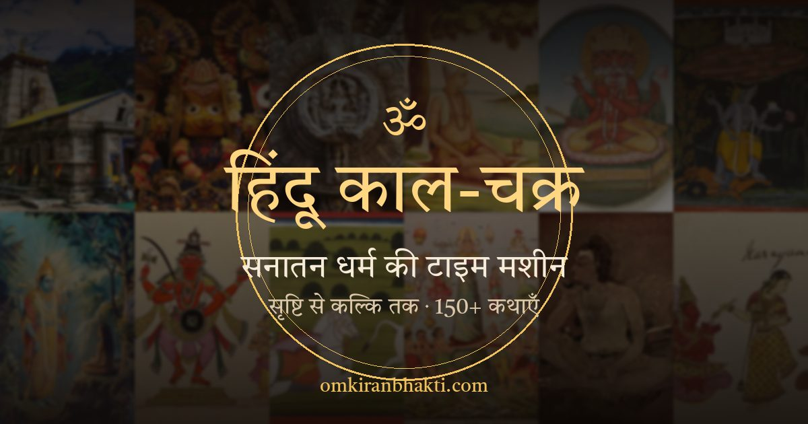
हिंदू काल-चक्र — यानी सनातन धर्म की टाइम मशीन। यहाँ आप सृष्टि के आरंभ से लेकर श्रीराम, श्रीकृष्ण, महाभारत, गीता, संतों और तीर्थों से होते हुए कल्कि अवतार और सत्ययुग की वापसी तक की यात्रा कर सकते हैं — एक घूमते हुए 3D चक्र पर, कथा और चित्रों के साथ।
सनातन परंपरा में समय गोल घूमता है। एक महायुग में चार युग होते हैं — सत्ययुग, त्रेतायुग, द्वापरयुग और कलियुग। एक हज़ार महायुग मिलकर ब्रह्मा जी का एक दिन, यानी एक कल्प बनाते हैं, और एक कल्प में चौदह मनु होते हैं। हमारा कल्प श्वेत वराह कल्प है, मन्वंतर वैवस्वत है, और अभी 28वें महायुग का कलियुग चल रहा है — यही बात हर पूजा के संकल्प में बोली जाती है।
नीचे हर युग की घटनाएँ क्रम से दी गई हैं। किसी भी घटना पर ‘काल-चक्र में देखें’ दबाएँगे तो 3D चक्र सीधे उसी घटना पर रुकेगा। Hindu Time Machine (Sanatan Time Machine / Hindu Kaal Chakra) — an interactive 3D timeline of Hindu (Sanatan) Dharma in Hindi, from creation to the Kalki avatar. Works on mobile.
युगों के क्रम में
- सृष्टि, कल्प और मन्वंतर (13)
- सत्ययुग (3)
- त्रेतायुग (15)
- द्वापरयुग (21)
- कलियुग (112)
- आप यहाँ हैं — आगे की भविष्यवाणियाँ (कलियुग का भविष्य और कल्कि) (14)
सृष्टि, कल्प और मन्वंतर
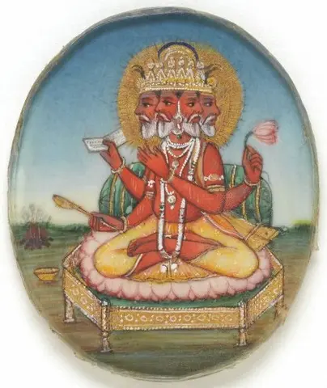
श्वेत वराह कल्प का आरंभ
ब्रह्मा जी का एक दिन एक कल्प कहलाता है। इसमें एक हज़ार महायुग होते हैं, यानी लगभग 432 करोड़ वर्ष। उतनी ही लंबी ब्रह्मा जी की रात होती है, जिसमें तीनों लोक जल में डूब जाते हैं। हर नए दिन की सुबह सृष्टि फिर से रची जाती है।
स्रोत: विष्णु पुराण (अंश 1, अध्याय 3); श्रीमद्भागवत (स्कंध 3, अध्याय 11)
काल-चक्र में देखें →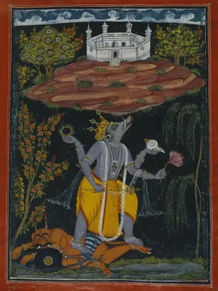
वराह अवतार — पृथ्वी का उद्धार
दिति के पुत्र हिरण्याक्ष ने ब्रह्मा जी से वर पाकर तीनों लोकों को भयभीत कर दिया। घमंड में उसने पृथ्वी को समुद्र के भीतर रसातल में छिपा दिया। तब सृष्टि आगे कैसे बढ़े, यह सोचते हुए ब्रह्मा जी की नासिका से अंगूठे जितना एक वराह प्रकट हुआ, जो देखते-ही-देखते पर्वत जितना विशाल हो गया।
स्रोत: श्रीमद्भागवत (स्कंध 3, अध्याय 13 और 18–19); वराह पुराण
काल-चक्र में देखें →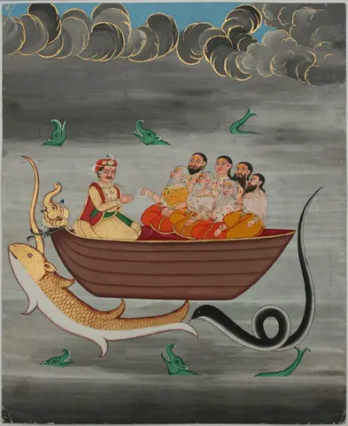
स्वायंभुव मनु — पहले मनु
सृष्टि के आरंभ में ब्रह्मा जी ने अपने शरीर के दो भाग किए। एक भाग से स्वायंभुव मनु और दूसरे से शतरूपा प्रकट हुए। यही पहले पुरुष और स्त्री माने गए, और इन्हीं से मानव वंश चला। मनु से उत्पन्न होने के कारण हम "मानव" कहलाते हैं।
स्रोत: श्रीमद्भागवत (स्कंध 3, अध्याय 12; स्कंध 4, अध्याय 1)
काल-चक्र में देखें →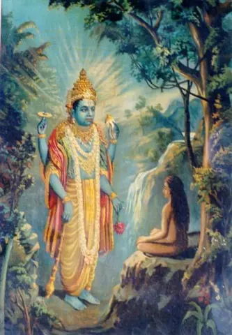
ध्रुव की तपस्या — ध्रुव तारा
राजा उत्तानपाद की दो रानियाँ थीं, सुनीति और सुरुचि। राजा छोटी रानी सुरुचि को अधिक प्रेम करते थे। एक दिन पाँच साल का ध्रुव पिता की गोद में बैठना चाहता था, पर सुरुचि ने उसे झिड़क दिया — "गोद चाहिए तो पहले भगवान की तपस्या करके मेरे गर्भ से जन्म ले।"
स्रोत: श्रीमद्भागवत (स्कंध 4, अध्याय 8–12); विष्णु पुराण (अंश 1, अध्याय 11–12)
काल-चक्र में देखें →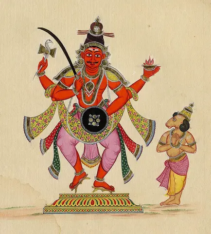
दक्ष यज्ञ और सती का देह-त्याग
प्रजापति दक्ष की पुत्री सती ने भगवान शिव से विवाह किया था, पर दक्ष के मन में शिव के लिए अहंकार और द्वेष था। एक बार दक्ष ने कनखल में एक बड़ा यज्ञ किया और सभी देवताओं को बुलाया, पर अपनी पुत्री और दामाद को नहीं।
स्रोत: श्रीमद्भागवत (स्कंध 4, अध्याय 2–7); शिव पुराण (रुद्र संहिता, सती खंड); शक्तिपीठों की कथा: देवी भागवत (स्कंध 7), कालिका पुराण
काल-चक्र में देखें →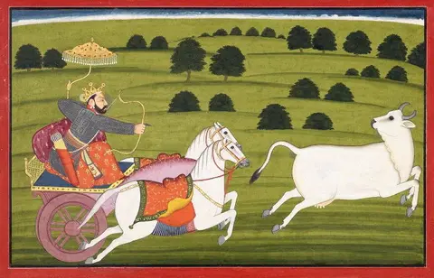
राजा पृथु और पृथ्वी का दोहन
अत्याचारी राजा वेन के अंत के बाद ऋषियों ने उसकी भुजाओं का मंथन किया। उससे भगवान विष्णु के अंश राजा पृथु और उनकी पत्नी अर्चि प्रकट हुए। पृथु के राजा बनते ही प्रजा भूख से व्याकुल होकर उनके पास आई, क्योंकि धरती ने सारा अन्न और औषधियाँ अपने भीतर छिपा ली थीं।
स्रोत: श्रीमद्भागवत (स्कंध 4, अध्याय 15–23); विष्णु पुराण (अंश 1, अध्याय 13)
काल-चक्र में देखें →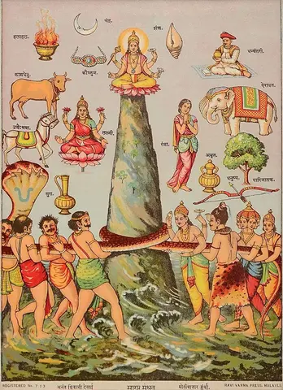
समुद्र मंथन और कूर्म अवतार
दुर्वासा ऋषि के शाप से देवता शक्तिहीन हो गए और असुरों से हारने लगे। भगवान विष्णु ने उपाय बताया — असुरों के साथ मिलकर क्षीर सागर मथो, उसमें से अमृत निकलेगा।
स्रोत: श्रीमद्भागवत (स्कंध 8, अध्याय 5–8); विष्णु पुराण (अंश 1, अध्याय 9)
काल-चक्र में देखें →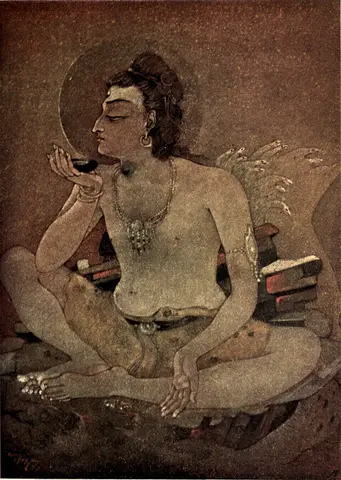
महादेव बने नीलकंठ
समुद्र मंथन में सबसे पहले हलाहल नाम का भयंकर विष निकला। उसकी ज्वाला से दसों दिशाएँ जलने लगीं। देवता और असुर दोनों भागकर भगवान शिव की शरण में पहुँचे।
स्रोत: श्रीमद्भागवत (स्कंध 8, अध्याय 7)
काल-चक्र में देखें →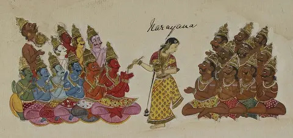
मोहिनी अवतार और कुंभ की कथा
जैसे ही धन्वंतरि अमृत-कलश लेकर निकले, असुर उसे छीनकर भाग गए और आपस में झगड़ने लगे। तब भगवान विष्णु ने अत्यंत सुंदर स्त्री मोहिनी का रूप धरा। असुर उनके रूप पर मोहित हो गए और अमृत बाँटने का काम उन्हीं को सौंप दिया।
स्रोत: श्रीमद्भागवत (स्कंध 8, अध्याय 8–9); कुंभ की बूँदों की कथा लोक-परंपरा और स्कंद पुराण से
काल-चक्र में देखें →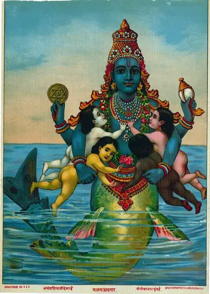
मत्स्य अवतार और महाप्रलय
पिछले कल्प के अंत में राजा सत्यव्रत कृतमाला नदी में तर्पण कर रहे थे। उनकी अंजलि में एक छोटी-सी मछली आ गई और बोली, "राजन, मुझे बड़ी मछलियों से बचाइए।" राजा उसे कमंडल में ले आए। पर रात भर में वह इतनी बड़ी हो गई कि कमंडल छोटा पड़ गया। फिर घड़ा, फिर तालाब, फिर झील — हर जगह वह और बड़ी हो जाती।
स्रोत: श्रीमद्भागवत (स्कंध 8, अध्याय 24); मत्स्य पुराण (अध्याय 1–2)
काल-चक्र में देखें →
वैवस्वत मन्वंतर का आरंभ
एक कल्प में चौदह मनु होते हैं। अब तक छह मनु — स्वायंभुव, स्वारोचिष, उत्तम, तामस, रैवत और चाक्षुष — का काल बीत चुका है। सातवें मनु हैं सूर्यदेव के पुत्र वैवस्वत मनु, जिन्हें श्राद्धदेव भी कहते हैं।
स्रोत: श्रीमद्भागवत (स्कंध 8, अध्याय 13); विष्णु पुराण (अंश 3, अध्याय 1)
काल-चक्र में देखें →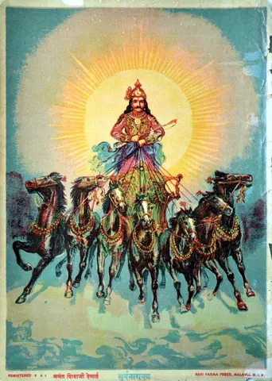
इक्ष्वाकु और सूर्यवंश
वैवस्वत मनु के दस पुत्रों में सबसे बड़े इक्ष्वाकु थे। उन्होंने सरयू तट पर अयोध्या को अपनी राजधानी बनाया। सूर्यदेव के पुत्र मनु से चलने के कारण यह वंश सूर्यवंश या इक्ष्वाकु वंश कहलाया।
स्रोत: श्रीमद्भागवत (स्कंध 9, अध्याय 6); वाल्मीकि रामायण (बालकांड, सर्ग 70)
काल-चक्र में देखें →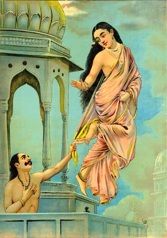
पुरूरवा और चंद्रवंश
चंद्रमा के पुत्र बुध और मनु की संतान इला से पुरूरवा का जन्म हुआ। उन्होंने गंगा-यमुना के संगम के पास प्रतिष्ठानपुर को राजधानी बनाया। चंद्रमा से चलने के कारण यह वंश चंद्रवंश या सोमवंश कहलाया।
स्रोत: श्रीमद्भागवत (स्कंध 9, अध्याय 14); विष्णु पुराण (अंश 4, अध्याय 6)
काल-चक्र में देखें →
सत्ययुग
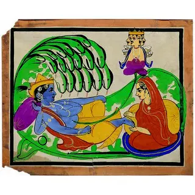
सत्ययुग का आरंभ
हर महायुग में चार युग होते हैं — सत्य, त्रेता, द्वापर और कलि। सत्ययुग या कृतयुग सबसे लंबा, 17,28,000 वर्ष का होता है। इस युग में धर्म अपने चारों चरणों — सत्य, तप, दया और दान — पर पूरी तरह खड़ा रहता है।
स्रोत: श्रीमद्भागवत (स्कंध 12, अध्याय 3); विष्णु पुराण (अंश 6, अध्याय 1)
काल-चक्र में देखें →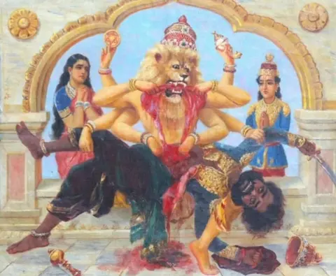
नृसिंह अवतार — प्रह्लाद की रक्षा
हिरण्याक्ष के वध से उसका भाई हिरण्यकशिपु भगवान विष्णु का शत्रु बन गया। उसने कठोर तप करके ब्रह्मा जी से वर माँगा कि वह न मनुष्य से मरे न पशु से, न दिन में न रात में, न घर के भीतर न बाहर, न धरती पर न आकाश में, और न किसी अस्त्र-शस्त्र से। वर पाकर वह खुद को भगवान कहने लगा।
स्रोत: श्रीमद्भागवत (स्कंध 7, अध्याय 2–10); विष्णु पुराण (अंश 1, अध्याय 17–20)
काल-चक्र में देखें →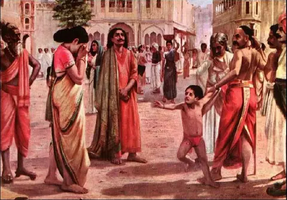
राजा हरिश्चंद्र की सत्य-परीक्षा
अयोध्या के राजा हरिश्चंद्र अपनी सत्यवादिता के लिए प्रसिद्ध थे। महर्षि विश्वामित्र ने उनकी परीक्षा ली। स्वप्न में दिए वचन को निभाने के लिए राजा ने अपना पूरा राज्य विश्वामित्र को दान कर दिया। फिर ऋषि ने दक्षिणा माँगी, जो चुकाने को राजा के पास कुछ नहीं बचा था।
स्रोत: मार्कंडेय पुराण (अध्याय 7–8); देवी भागवत (स्कंध 7)
काल-चक्र में देखें →
त्रेतायुग
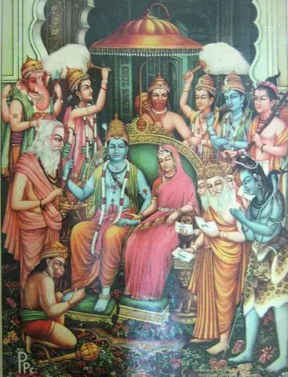
त्रेतायुग का आरंभ
सत्ययुग के बाद 12,96,000 वर्ष का त्रेतायुग आया। धर्म का एक चरण घट गया और वह तीन चरणों पर रह गया। इस युग का मुख्य साधन यज्ञ माना गया।
स्रोत: श्रीमद्भागवत (स्कंध 12, अध्याय 3); विष्णु पुराण (अंश 6, अध्याय 1)
काल-चक्र में देखें →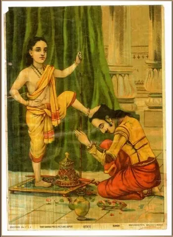
वामन अवतार और राजा बलि
प्रह्लाद के पौत्र राजा बलि बड़े दानवीर और पराक्रमी थे। गुरु शुक्राचार्य की सहायता से उन्होंने स्वर्ग जीत लिया और देवता बेघर हो गए। देवमाता अदिति ने तप किया, तब भगवान विष्णु उनके पुत्र बनकर एक छोटे ब्राह्मण बालक वामन के रूप में जन्मे।
स्रोत: श्रीमद्भागवत (स्कंध 8, अध्याय 15–23); वामन पुराण
काल-चक्र में देखें →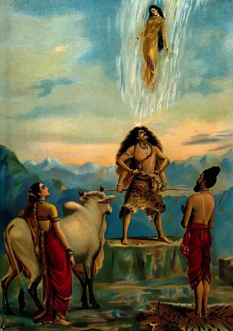
भगीरथ ने गंगा को धरती पर उतारा
अयोध्या के राजा सगर के साठ हज़ार पुत्र अश्वमेध के घोड़े को खोजते हुए कपिल मुनि के आश्रम पहुँचे। उन्होंने मुनि पर चोरी का आरोप लगाया, और मुनि की दृष्टि पड़ते ही सब भस्म हो गए। उनका उद्धार केवल स्वर्ग की गंगा के जल से हो सकता था।
स्रोत: वाल्मीकि रामायण (बालकांड, सर्ग 38–44); श्रीमद्भागवत (स्कंध 9, अध्याय 8–9)
काल-चक्र में देखें →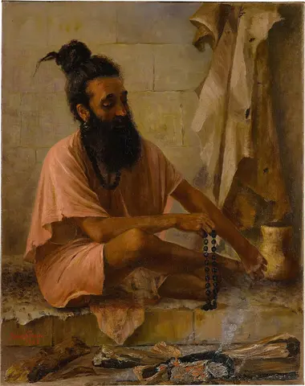
विश्वामित्र बने ब्रह्मर्षि
कान्यकुब्ज के राजा कौशिक एक बार सेना के साथ वसिष्ठ ऋषि के आश्रम पहुँचे। वसिष्ठ ने कामधेनु गाय नंदिनी की कृपा से पूरी सेना को भोजन कराया। राजा ने वह गाय माँगी। मना करने पर बलपूर्वक छीनना चाहा, पर नंदिनी से प्रकट सेना ने राजा को हरा दिया।
स्रोत: वाल्मीकि रामायण (बालकांड, सर्ग 51–65); ऋग्वेद (मंडल 3, सूक्त 62 — गायत्री मंत्र)
काल-चक्र में देखें →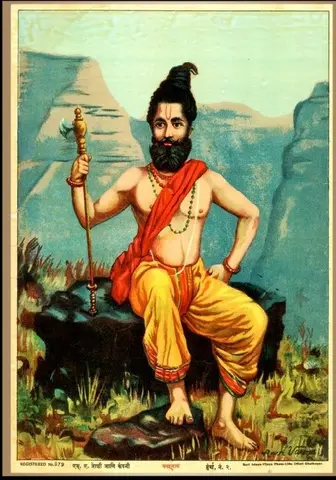
परशुराम अवतार
महर्षि जमदग्नि और माता रेणुका के पुत्र राम ने भगवान शिव की तपस्या करके दिव्य परशु (फरसा) पाया, इसलिए वे परशुराम कहलाए। वे विष्णु के छठे अवतार हैं और चिरंजीवी माने जाते हैं।
स्रोत: श्रीमद्भागवत (स्कंध 9, अध्याय 15–16); महाभारत (वनपर्व और शांतिपर्व)
काल-चक्र में देखें →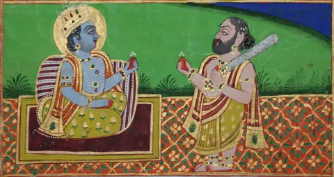
अगस्त्य ऋषि ने विंध्य पार किया
विंध्य पर्वत को घमंड हो गया और वह सूर्य का रास्ता रोकने के लिए ऊँचा उठने लगा। संसार में अंधेरा होने का डर था। तब देवताओं ने विंध्य के गुरु अगस्त्य ऋषि से विनती की।
स्रोत: महाभारत (वनपर्व, तीर्थयात्रा पर्व); वाल्मीकि रामायण (युद्धकांड — आदित्य हृदय स्तोत्र)
काल-चक्र में देखें →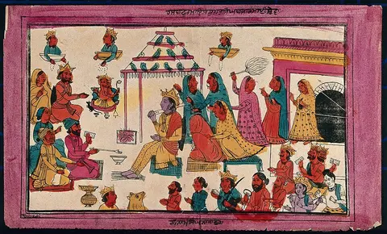
सीता स्वयंवर
मिथिला के राजा जनक को हल चलाते समय धरती से एक कन्या मिली, जिसका नाम सीता रखा गया। जनक के पास भगवान शिव का विशाल धनुष पिनाक था। उन्होंने प्रण किया कि जो इस धनुष पर प्रत्यंचा चढ़ाएगा, उसी से सीता का विवाह होगा।
स्रोत: वाल्मीकि रामायण (बालकांड, सर्ग 66–73); रामचरितमानस (बालकांड)
काल-चक्र में देखें →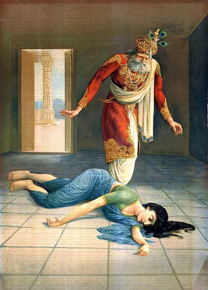
श्रीराम का वनवास
राजा दशरथ ने श्रीराम के राज्याभिषेक की घोषणा की। पर दासी मंथरा की बातों में आकर रानी कैकेयी ने राजा से वे दो वरदान माँगे, जो उन्होंने बहुत पहले युद्ध में दिए थे — भरत को राज्य और राम को चौदह वर्ष का वनवास।
स्रोत: वाल्मीकि रामायण (अयोध्याकांड); रामचरितमानस (अयोध्याकांड)
काल-चक्र में देखें →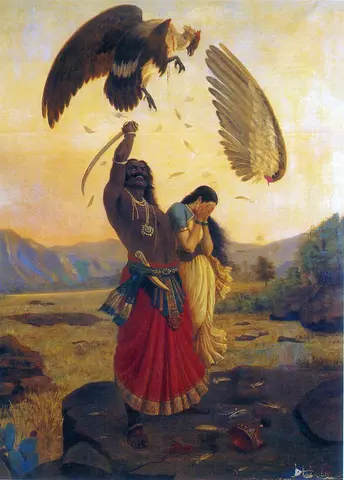
सीता हरण
वनवास के अंतिम वर्षों में श्रीराम पंचवटी में रह रहे थे। रावण की बहन शूर्पणखा ने राम और लक्ष्मण से विवाह करना चाहा और सीता पर झपटी, तो लक्ष्मण ने उसके नाक-कान काट दिए। बदला लेने के लिए रावण ने मारीच को सोने का हिरण बनाकर भेजा।
स्रोत: वाल्मीकि रामायण (अरण्यकांड, सर्ग 43–68); रामचरितमानस (अरण्यकांड)
काल-चक्र में देखें →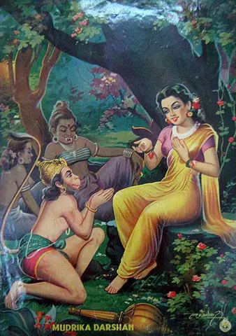
हनुमान जी की लंका छलांग
सीता की खोज में वानर दक्षिण के समुद्र तट पर पहुँचे, पर सौ योजन का समुद्र कौन लाँघे? जाम्बवान ने हनुमान जी को उनकी भूली हुई शक्ति याद दिलाई। हनुमान जी ने महेंद्र पर्वत से विराट रूप धरकर छलांग लगाई।
स्रोत: वाल्मीकि रामायण (सुंदरकांड); रामचरितमानस (सुंदरकांड)
काल-चक्र में देखें →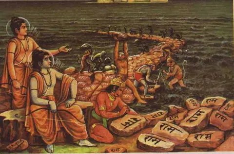
राम सेतु का निर्माण
सीता का पता मिलने पर श्रीराम वानर सेना के साथ समुद्र तट पर पहुँचे। उन्होंने तीन दिन समुद्र देव से रास्ता माँगा। जब समुद्र नहीं माना, तो श्रीराम ने धनुष उठाया। तब समुद्र देव प्रकट हुए और बताया कि सेना में विश्वकर्मा के पुत्र नल हैं, जिनके हाथ से डाले पत्थर तैरेंगे।
स्रोत: वाल्मीकि रामायण (युद्धकांड, सर्ग 21–22); रामचरितमानस (लंकाकांड); शिवलिंग-स्थापना की कथा अध्यात्म रामायण और स्कंद पुराण से
काल-चक्र में देखें →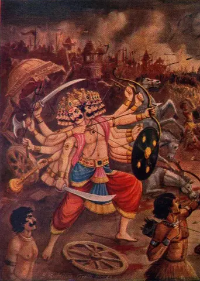
रावण का अंत
सेतु पार कर वानर सेना लंका पहुँची। अंगद को शांति-दूत बनाकर भेजा गया, पर रावण नहीं माना। भयंकर युद्ध शुरू हुआ। मेघनाद के शक्ति-बाण से लक्ष्मण मूर्छित हुए, तो हनुमान जी पूरा द्रोणागिरि पर्वत उठाकर संजीवनी बूटी ले आए।
स्रोत: वाल्मीकि रामायण (युद्धकांड, सर्ग 108–111); रामचरितमानस (लंकाकांड)
काल-चक्र में देखें →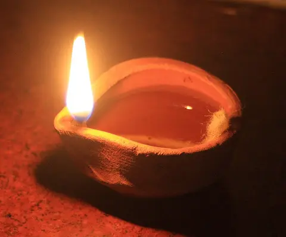
श्रीराम की वापसी और राम-राज्य
रावण-वध के बाद सीता माँ ने अग्नि-परीक्षा दी और श्रीराम, सीता, लक्ष्मण और साथी पुष्पक विमान से अयोध्या की ओर चले। हनुमान जी पहले से भरत को समाचार देने पहुँचे, क्योंकि भरत ने प्रण किया था कि चौदह वर्ष पूरे होने पर राम न लौटे तो वे अग्नि में प्रवेश कर लेंगे।
स्रोत: वाल्मीकि रामायण (युद्धकांड, सर्ग 127–128); रामचरितमानस (उत्तरकांड)
काल-चक्र में देखें →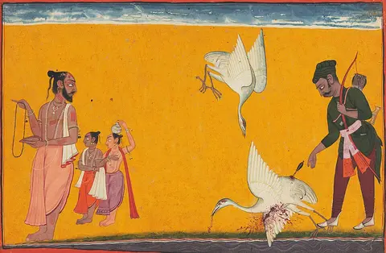
वाल्मीकि ने रामायण रची
महर्षि वाल्मीकि तमसा नदी के तट पर स्नान करने गए थे। वहाँ क्रौंच पक्षियों का एक जोड़ा प्रेम में मग्न था। तभी एक शिकारी ने नर पक्षी को बाण मार दिया। मादा का विलाप सुनकर ऋषि का हृदय करुणा से भर गया और उनके मुख से अपने-आप एक छंद निकला — "मा निषाद प्रतिष्ठां त्वमगमः शाश्वतीः समाः..."।
स्रोत: वाल्मीकि रामायण (बालकांड, सर्ग 1–4)
काल-चक्र में देखें →
द्वापरयुग
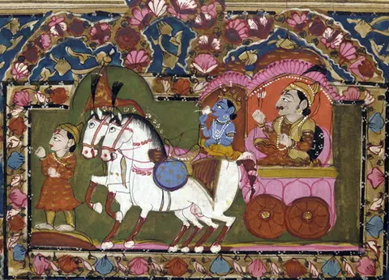
द्वापरयुग का आरंभ
त्रेता के बाद 8,64,000 वर्ष का द्वापरयुग आया। धर्म दो चरणों पर रह गया। इस युग का मुख्य साधन विधि-पूर्वक पूजा और अर्चना माना गया।
स्रोत: श्रीमद्भागवत (स्कंध 12, अध्याय 3); विष्णु पुराण (अंश 6, अध्याय 1)
काल-चक्र में देखें →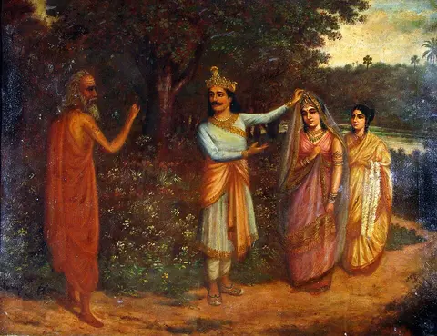
चक्रवर्ती भरत — जिनसे "भारत"
चंद्रवंशी राजा दुष्यंत शिकार खेलते हुए कण्व ऋषि के आश्रम पहुँचे। वहाँ ऋषि की पालित पुत्री शकुंतला से उनका गंधर्व विवाह हुआ। राजा अँगूठी देकर राजधानी लौट गए। दुर्वासा ऋषि के शाप से राजा शकुंतला को भूल गए, और अँगूठी मिलने पर ही उन्हें सब याद आया।
स्रोत: महाभारत (आदिपर्व, शकुंतलोपाख्यान); कालिदास का अभिज्ञानशाकुंतलम्; विष्णु पुराण (अंश 2, अध्याय 1 — ऋषभपुत्र भरत)
काल-चक्र में देखें →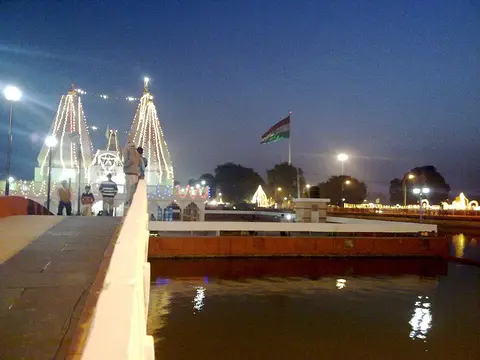
राजा कुरु और कुरुक्षेत्र
चंद्रवंश के राजा कुरु ने एक भूमि पर सोने का हल चलाना शुरू किया। इंद्र ने पूछा, "क्या कर रहे हो?" कुरु बोले, "यहाँ तप, सत्य, क्षमा, दया, पवित्रता, दान, योग और ब्रह्मचर्य — ये आठ धर्म उगा रहा हूँ।"
स्रोत: महाभारत (शल्यपर्व, अध्याय 53); वामन पुराण
काल-चक्र में देखें →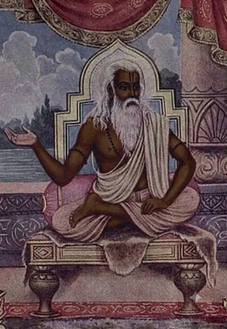
वेदव्यास का जन्म
यमुना में नाव चलाने वाली सत्यवती की नाव से पराशर ऋषि नदी पार कर रहे थे। ऋषि की कृपा से यमुना के एक द्वीप पर सत्यवती के पुत्र का जन्म हुआ। रंग साँवला होने और द्वीप पर जन्मने के कारण वे "कृष्णद्वैपायन" कहलाए।
स्रोत: महाभारत (आदिपर्व, अध्याय 63); श्रीमद्भागवत (स्कंध 1, अध्याय 3–4)
काल-चक्र में देखें →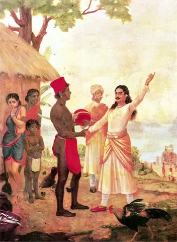
भीष्म की प्रतिज्ञा
हस्तिनापुर के राजा शांतनु और गंगा माँ के पुत्र देवव्रत युवराज थे। एक दिन शांतनु मछुआरों के मुखिया की पुत्री सत्यवती पर मोहित हो गए। मुखिया ने शर्त रखी कि सत्यवती का पुत्र ही राजा बनेगा। शांतनु यह वचन न दे सके और उदास रहने लगे।
स्रोत: महाभारत (आदिपर्व, संभव पर्व, अध्याय 100)
काल-चक्र में देखें →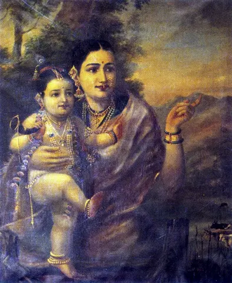
श्रीकृष्ण का जन्म
मथुरा का अत्याचारी राजा कंस अपनी बहन देवकी के विवाह के बाद रथ हाँक रहा था, तभी आकाशवाणी हुई — "देवकी का आठवाँ पुत्र तेरा काल बनेगा।" कंस ने देवकी और वसुदेव को कारागार में डाल दिया और उनके छह पुत्रों को जन्म लेते ही मार डाला। सातवें गर्भ को योगमाया ने रोहिणी के गर्भ में पहुँचा दिया, जिससे बलराम जन्मे।
स्रोत: श्रीमद्भागवत (स्कंध 10, अध्याय 1–4); हरिवंश पुराण
काल-चक्र में देखें →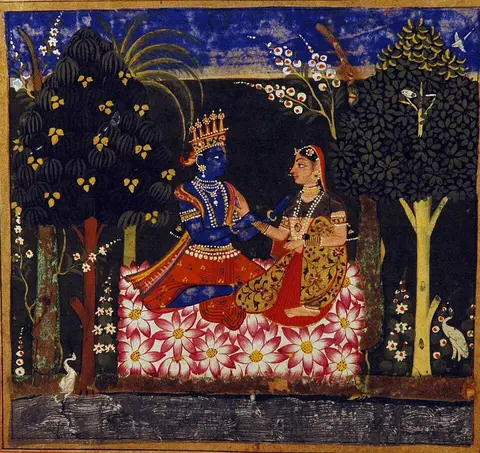
वृंदावन की लीलाएँ
गोकुल और वृंदावन में नन्हे कान्हा ने ऐसी लीलाएँ कीं, जिन्हें आज भी हर घर में गाया जाता है। बचपन में ही उन्होंने पूतना, शकटासुर और तृणावर्त जैसे असुरों का अंत किया। माखन चुराने पर यशोदा मैया ने उन्हें ओखल से बाँधा, तो वे दामोदर कहलाए। मिट्टी खाने पर माँ ने मुँह खुलवाया, तो उसमें पूरा ब्रह्मांड दिखा।
स्रोत: श्रीमद्भागवत (स्कंध 10, अध्याय 6–33)
काल-चक्र में देखें →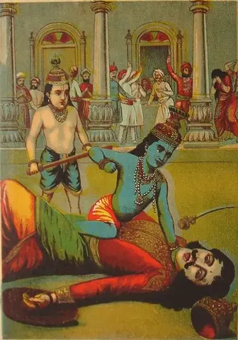
श्रीकृष्ण ने कंस का वध किया
कंस ने कृष्ण-बलराम को मारने के लिए धनुर्यज्ञ और मल्ल-युद्ध का आयोजन किया और अक्रूर जी को उन्हें बुलाने भेजा। ब्रज छोड़ते समय गोपियों और यशोदा मैया का विलाप आज भी गाया जाता है।
स्रोत: श्रीमद्भागवत (स्कंध 10, अध्याय 39–45)
काल-चक्र में देखें →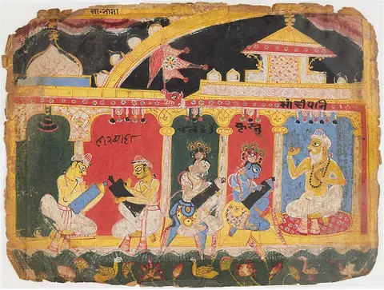
सांदीपनि आश्रम में शिक्षा
कंस-वध के बाद यज्ञोपवीत संस्कार हुआ और कृष्ण-बलराम विद्या पाने उज्जैन में गुरु सांदीपनि के आश्रम गए। वहाँ उन्होंने केवल 64 दिनों में 64 कलाएँ और सारे शास्त्र सीख लिए।
स्रोत: श्रीमद्भागवत (स्कंध 10, अध्याय 45; सुदामा प्रसंग अध्याय 80–81)
काल-चक्र में देखें →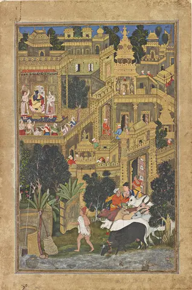
द्वारका की स्थापना
कंस का ससुर मगधराज जरासंध बदला लेने के लिए सत्रह बार मथुरा पर चढ़ आया। हर बार कृष्ण-बलराम ने उसकी सेना हराई, पर प्रजा बार-बार के युद्ध से थक गई। अठारहवीं बार जरासंध के साथ कालयवन भी आ गया।
स्रोत: श्रीमद्भागवत (स्कंध 10, अध्याय 50); हरिवंश पुराण
काल-चक्र में देखें →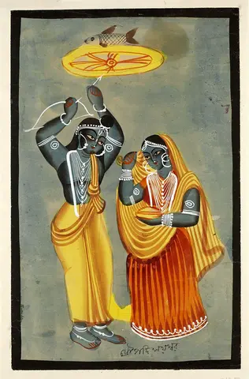
द्रौपदी स्वयंवर
लाक्षागृह से बचकर पांडव ब्राह्मण वेश में रह रहे थे। तभी पांचाल के राजा द्रुपद ने अपनी पुत्री द्रौपदी का स्वयंवर रखा। शर्त थी — ऊपर घूमती मछली की आँख को, नीचे जल में उसकी परछाईं देखकर, बाण से भेदना।
स्रोत: महाभारत (आदिपर्व, स्वयंवर पर्व)
काल-चक्र में देखें →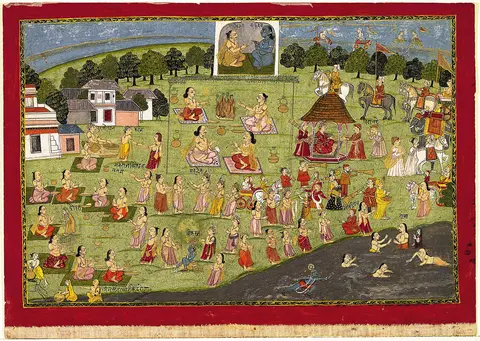
इंद्रप्रस्थ और राजसूय यज्ञ
आधा राज्य मिलने पर पांडवों को बंजर खांडवप्रस्थ मिला। श्रीकृष्ण और अर्जुन ने अग्निदेव की भूख मिटाने के लिए खांडव वन जलाया, और मय दानव ने बचाए जाने के बदले एक अद्भुत सभा-भवन बनाया। यही नगरी इंद्रप्रस्थ बनी।
स्रोत: महाभारत (आदिपर्व, खांडवदाह पर्व; सभापर्व)
काल-चक्र में देखें →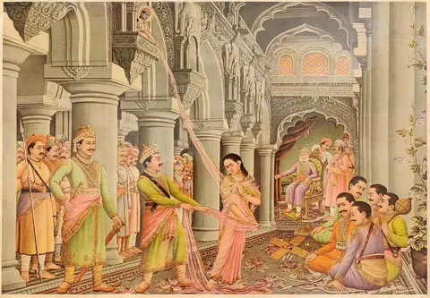
द्यूत क्रीड़ा और द्रौपदी की लाज
पांडवों का वैभव देखकर दुर्योधन जलने लगा। मामा शकुनि ने कपट के पासों से जुआ खेलने की चाल चली। युधिष्ठिर एक-एक कर राज्य, धन, भाई और खुद को हार गए, और अंत में द्रौपदी को भी दाँव पर लगा दिया।
स्रोत: महाभारत (सभापर्व, द्यूत पर्व)
काल-चक्र में देखें →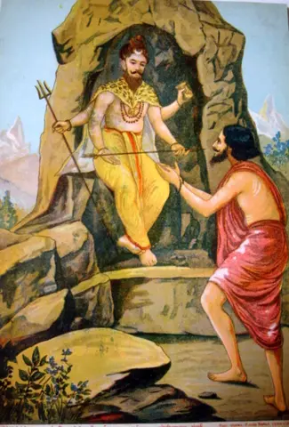
अर्जुन को पाशुपतास्त्र
वनवास के समय व्यास जी की सलाह पर अर्जुन दिव्य अस्त्र पाने हिमालय के इंद्रकील पर्वत पर तप करने गए। उनकी परीक्षा लेने भगवान शिव किरात (शिकारी) के वेश में और माँ पार्वती किरातनी बनकर आए।
स्रोत: महाभारत (वनपर्व, कैरात पर्व, अध्याय 39–41)
काल-चक्र में देखें →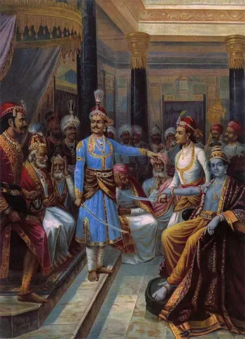
श्रीकृष्ण बने शांति-दूत
तेरह वर्ष का वनवास पूरा होने पर पांडवों ने अपना राज्य वापस माँगा, पर दुर्योधन नहीं माना। युद्ध टालने के लिए श्रीकृष्ण स्वयं शांति-दूत बनकर हस्तिनापुर गए। उन्होंने दुर्योधन के राजमहल का भोजन छोड़कर विदुर के घर साग खाया।
स्रोत: महाभारत (उद्योगपर्व, भगवद्यान पर्व)
काल-चक्र में देखें →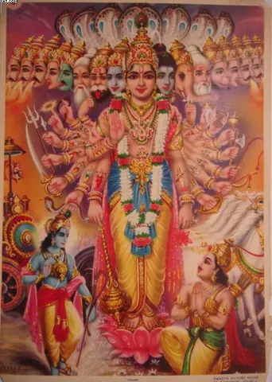
भगवद्गीता का उपदेश
कुरुक्षेत्र में दोनों सेनाएँ आमने-सामने खड़ी थीं। अर्जुन ने श्रीकृष्ण से कहा, "रथ को दोनों सेनाओं के बीच ले चलो।" सामने दादा भीष्म, गुरु द्रोण और अपने ही भाई-बंधुओं को देखकर अर्जुन का मन काँप गया। गांडीव हाथ से गिर गया और वे बोले, "मैं युद्ध नहीं करूँगा।"
स्रोत: महाभारत (भीष्मपर्व, अध्याय 25–42) — 18 अध्याय, 700 श्लोक
काल-चक्र में देखें →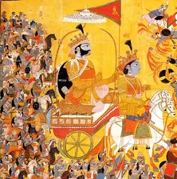
महाभारत का युद्ध
कुरुक्षेत्र में अठारह दिन तक धर्मयुद्ध चला। पांडवों की सात और कौरवों की ग्यारह, कुल अठारह अक्षौहिणी सेना लड़ी। श्रीकृष्ण ने शस्त्र न उठाने का प्रण लिया और अर्जुन के सारथी बने।
स्रोत: महाभारत (भीष्म, द्रोण, कर्ण, शल्य और सौप्तिक पर्व)
काल-चक्र में देखें →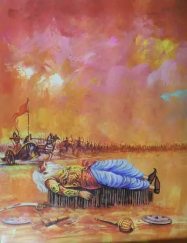
शरशय्या पर भीष्म
युद्ध के दसवें दिन अर्जुन ने शिखंडी को आगे रखकर भीष्म पर बाणों की वर्षा की। भीष्म शिखंडी पर शस्त्र नहीं उठाते थे। उनका पूरा शरीर बाणों से भर गया और वे बाणों की ही शय्या पर गिर पड़े। सिर लटकने लगा, तो अर्जुन ने तीन बाण चलाकर तकिया बनाया, और प्यास लगी तो धरती में बाण मारकर गंगा की धारा निकाली।
स्रोत: महाभारत (भीष्मपर्व; शांतिपर्व; अनुशासनपर्व, अध्याय 149 — विष्णु सहस्रनाम)
काल-चक्र में देखें →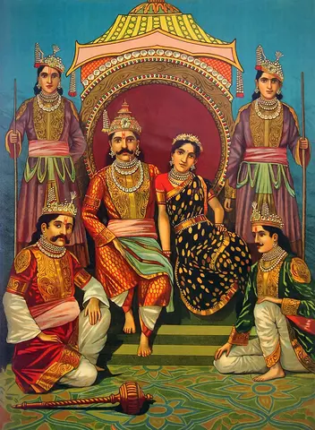
युधिष्ठिर का राज्याभिषेक
युद्ध के बाद युधिष्ठिर शोक में डूब गए और राज्य छोड़कर वन जाना चाहते थे। श्रीकृष्ण, व्यास जी और भाइयों ने उन्हें समझाया कि प्रजा की रक्षा करना ही अब उनका धर्म है।
स्रोत: महाभारत (शांतिपर्व; आश्वमेधिक पर्व)
काल-चक्र में देखें →यादव वंश का अंत
युद्ध के छत्तीस वर्ष बाद, गांधारी का शाप सच होने का समय आया। कुछ यादव युवकों ने मज़ाक में सांब को गर्भवती स्त्री का वेश पहनाकर ऋषियों से पूछा कि इसके पेट से क्या जन्मेगा। क्रोधित ऋषियों ने शाप दिया कि एक मूसल जन्मेगा, जो पूरे यदुवंश का नाश करेगा।
स्रोत: महाभारत (मौसलपर्व); श्रीमद्भागवत (स्कंध 11, अध्याय 1 और 30)
काल-चक्र में देखें →श्रीकृष्ण का स्वधाम गमन
यदुवंश के अंत के बाद बलराम जी ने समुद्र तट पर योग से देह त्यागी, और उनके मुख से शेषनाग निकलकर समुद्र में चले गए। श्रीकृष्ण एक पीपल के पेड़ के नीचे शांत भाव से बैठ गए, बायाँ पैर दाहिनी जाँघ पर रखे।
स्रोत: श्रीमद्भागवत (स्कंध 11, अध्याय 30–31); महाभारत (मौसलपर्व)
काल-चक्र में देखें →
कलियुग
कलियुग का आरंभ
जिस दिन श्रीकृष्ण इस धरती से गए, उसी दिन कलियुग शुरू हुआ। परंपरागत गणना के अनुसार यह ईसा पूर्व 3102 था। कलियुग 4,32,000 वर्ष का है और इसमें धर्म केवल एक चरण — सत्य — पर टिका रहता है।
स्रोत: श्रीमद्भागवत (स्कंध 1, अध्याय 17; स्कंध 12, अध्याय 2–3); विष्णु पुराण (अंश 4, अध्याय 24)
काल-चक्र में देखें →पांडवों का महाप्रस्थान
श्रीकृष्ण के जाने का समाचार सुनकर पांडवों का मन संसार से उठ गया। युधिष्ठिर ने परीक्षित को राजा बनाया और पाँचों भाई द्रौपदी के साथ हिमालय की ओर चल पड़े। एक कुत्ता भी उनके साथ चलता रहा।
स्रोत: महाभारत (महाप्रस्थानिक पर्व; स्वर्गारोहण पर्व)
काल-चक्र में देखें →वेदव्यास ने वेदों का विभाजन किया
व्यास जी ने देखा कि कलियुग में लोगों की आयु, स्मृति और बुद्धि घटती जाएगी, और वे विशाल वेद को एक साथ याद नहीं रख पाएँगे। इसलिए उन्होंने वेद को चार भागों में बाँटा — ऋग्वेद, यजुर्वेद, सामवेद और अथर्ववेद।
स्रोत: श्रीमद्भागवत (स्कंध 1, अध्याय 4; स्कंध 12, अध्याय 6); विष्णु पुराण (अंश 3, अध्याय 4)
काल-चक्र में देखें →शुकदेव ने परीक्षित को भागवत सुनाई
राजा परीक्षित एक बार शिकार करते हुए प्यास से व्याकुल होकर शमीक ऋषि के आश्रम पहुँचे। ऋषि ध्यान में थे और उत्तर नहीं दे पाए। गुस्से में राजा ने एक मरा हुआ साँप ऋषि के गले में डाल दिया। ऋषि के पुत्र शृंगी ने शाप दिया कि सात दिन में तक्षक नाग के डसने से राजा की मृत्यु होगी।
स्रोत: श्रीमद्भागवत (स्कंध 1, अध्याय 18–19; स्कंध 12, अध्याय 6)
काल-चक्र में देखें →जनमेजय का सर्प-सत्र
पिता परीक्षित की मृत्यु तक्षक के डसने से हुई थी, यह जानकर राजा जनमेजय ने बदला लेने के लिए सर्प-सत्र (सर्प-यज्ञ) शुरू किया। मंत्रों के बल से संसार भर के साँप आकर यज्ञ-अग्नि में गिरने लगे।
स्रोत: महाभारत (आदिपर्व, आस्तीक पर्व)
काल-चक्र में देखें →नैमिषारण्य में सूत जी की कथा
कलियुग के आरंभ में शौनक आदि अट्ठासी हज़ार ऋषियों ने नैमिषारण्य में एक हज़ार वर्ष का बड़ा यज्ञ शुरू किया। कहते हैं, ब्रह्मा जी ने एक चक्र छोड़ा था, और जहाँ उसकी नेमि (धुरी) गिरी, वही स्थान सबसे पवित्र माना गया — इसलिए नाम पड़ा नैमिषारण्य।
स्रोत: श्रीमद्भागवत (स्कंध 1, अध्याय 1); स्कंद पुराण (रेवा खंड — सत्यनारायण कथा)
काल-चक्र में देखें →हर की पौड़ी, हरिद्वार
हरिद्वार में गंगा जहाँ पहाड़ों से उतरकर मैदान में आती है, वहीं हर की पौड़ी है — यानी हरि के चरण। लोक-परंपरा कहती है कि उज्जैन के राजा विक्रमादित्य ने अपने भाई, वैराग्य लेने वाले भर्तृहरि की स्मृति में ये सीढ़ियाँ बनवाईं, जिन्होंने यहीं तप किया था।
स्रोत: स्थानीय परंपरा; कुंभ-स्नान की परंपरा के लिए स्कंद पुराण (केदार खंड)
काल-चक्र में देखें →एलीफेंटा की गुफाएँ और सदाशिव
मुंबई बंदरगाह के घारापुरी द्वीप पर चट्टान को भीतर से काटकर शिव-मंदिर बनाए गए। विद्वान इन्हें लगभग छठी सदी का मानते हैं। मुख्य गुफा में करीब छह मीटर ऊँची त्रिमुखी मूर्ति है — एक मुख शांत, एक उग्र और एक सौम्य, जो सृष्टि, संहार और पालन का भाव दिखाते हैं।
स्रोत: पुरातात्विक सर्वेक्षण (ASI) और यूनेस्को विश्व धरोहर विवरण
काल-चक्र में देखें →बादामी की विष्णु गुफा
लाल बलुआ पत्थर की पहाड़ी काटकर बनी बादामी की चार गुफाओं में तीसरी गुफा सबसे बड़ी है। इसमें लगा शिलालेख बताता है कि चालुक्य राजा मंगलेश ने इसे शक संवत 500, यानी लगभग 578 ई. में विष्णु को समर्पित किया।
स्रोत: गुफा 3 का मंगलेश शिलालेख; पुरातात्विक सर्वेक्षण (ASI)
काल-चक्र में देखें →महाबलीपुरम का तट मंदिर
बंगाल की खाड़ी के किनारे खड़ा यह मंदिर पल्लव राजा नरसिंहवर्मन द्वितीय (राजसिंह) के समय, लगभग आठवीं सदी की शुरुआत में बना। यह दक्षिण भारत के सबसे पुराने पत्थर के बने (चट्टान काटकर नहीं, पत्थर जोड़कर) मंदिरों में गिना जाता है।
स्रोत: पल्लव शिलालेख; भारतीय पुरातत्व सर्वेक्षण
काल-चक्र में देखें →कांची का कैलाशनाथर मंदिर
कांचीपुरम को मंदिरों का नगर कहा जाता है, और उसमें सबसे पुराना पत्थर का मंदिर कैलाशनाथर है। इसे आठवीं सदी की शुरुआत में पल्लव राजा नरसिंहवर्मन द्वितीय (राजसिंह) ने बनवाना शुरू किया और उनके पुत्र महेंद्रवर्मन तृतीय ने पूरा कराया।
स्रोत: पल्लव शिलालेख; भारतीय पुरातत्व सर्वेक्षण
काल-चक्र में देखें →मार्तंड सूर्य मंदिर
कल्हण की राजतरंगिणी के अनुसार कार्कोट वंश के प्रतापी राजा ललितादित्य मुक्तापीड ने आठवीं सदी में मार्तंड यानी सूर्य देव का ये मंदिर बनवाया। ये एक ऊँचे पठार पर है, जहाँ से पूरी घाटी और बर्फ़ीले पहाड़ दिखते हैं।
स्रोत: कल्हण, राजतरंगिणी (तरंग 4)
काल-चक्र में देखें →आंडाल — गोदा देवी
श्रीविल्लिपुत्तूर के पेरियालवार को तुलसी के पौधे के पास एक कन्या मिली, जिसका नाम गोदा रखा गया। बचपन से ही वह भगवान रंगनाथ को अपना पति मानती थी। भगवान के लिए बनी माला वह पहले खुद पहनकर देखती, फिर अर्पित करती।
स्रोत: नालायिर दिव्य प्रबंधम् (तिरुप्पावै, नाच्चियार तिरुमोऴि); आलवार परंपरा
काल-चक्र में देखें →एलोरा का कैलाश मंदिर
एलोरा की गुफा संख्या 16 में बना कैलाश मंदिर दुनिया का सबसे बड़ा एकाश्म (एक ही चट्टान से तराशा) मंदिर माना जाता है। आठवीं सदी में राष्ट्रकूट राजा कृष्ण प्रथम के समय कारीगरों ने पहाड़ को ऊपर से नीचे की ओर काटा और पूरा मंदिर, आँगन, हाथी और स्तंभ उसी चट्टान से निकाले।
स्रोत: राष्ट्रकूट ताम्रपत्र; भारतीय पुरातत्व सर्वेक्षण
काल-चक्र में देखें →आदि शंकराचार्य — अद्वैत और चार मठ
केरल के कालड़ी गाँव में शिवगुरु और आर्यांबा के घर शंकर का जन्म हुआ। कथा है कि नदी में मगर ने उनका पैर पकड़ लिया, तब माँ से संन्यास की अनुमति लेकर ही वे बचे। नर्मदा तट पर गुरु गोविंद भगवत्पाद से दीक्षा ली।
स्रोत: शंकर दिग्विजय (परंपरागत जीवनी); शंकराचार्य के भाष्य
काल-चक्र में देखें →केदारनाथ धाम
महाभारत युद्ध के बाद पांडव अपने कुल-वध के पाप से मुक्ति के लिए शिव को खोजते हिमालय आए। महादेव उनसे बचने के लिए बैल (नंदी) का रूप धरकर धरती में समाने लगे। भीम ने बैल की पीठ पकड़ ली। वही पीठ केदारनाथ में पूजी जाती है, और शरीर के बाकी भाग पंच केदार में।
स्रोत: शिव पुराण (कोटिरुद्र संहिता); स्कंद पुराण (केदार खंड)
काल-चक्र में देखें →बद्रीनाथ धाम
कथा है कि भगवान विष्णु यहाँ तप कर रहे थे, तब माँ लक्ष्मी ने बेर (बदरी) का वृक्ष बनकर उन्हें धूप और बर्फ से बचाया। इसीलिए यह बदरीनाथ कहलाया। नर-नारायण ऋषियों ने भी यहीं तप किया था।
स्रोत: स्कंद पुराण (वैष्णव खंड); महाभारत (वनपर्व)
काल-चक्र में देखें →तिरुमला के श्री वेंकटेश्वर
पुराण कथा है कि जब भृगु ऋषि ने विष्णु की छाती पर लात मारी, तो लक्ष्मी रूठकर धरती पर चली गईं। उन्हें खोजते हुए भगवान वेंकटाद्रि पर्वत पर आए और श्रीनिवास के रूप में राजा आकाशराज की पुत्री पद्मावती से विवाह किया। विवाह के खर्च के लिए उन्होंने कुबेर से कर्ज़ लिया, जिसे चुकाने के लिए भक्त आज भी दान देते हैं।
स्रोत: वेंकटाचल माहात्म्य (स्कंद पुराण); मंदिर के शिलालेख
काल-चक्र में देखें →चिदंबरम के नटराज
पुराण कथा है कि दारुकावन के ऋषियों का अहंकार तोड़ने के लिए शिव ने वहाँ आनंद तांडव किया। पतंजलि और व्याघ्रपाद ऋषियों ने इस नृत्य के दर्शन के लिए तप किया, और शिव ने चिदंबरम (तिल्लई) में नटराज रूप में उन्हें नृत्य दिखाया।
स्रोत: चिदंबर माहात्म्य; कोयिल पुराणम्; चोल शिलालेख
काल-चक्र में देखें →ओंकारेश्वर ज्योतिर्लिंग
नर्मदा नदी यहाँ दो धाराओं में बँटकर मांधाता नाम का एक द्वीप बनाती है, जिसका आकार ऊपर से ॐ जैसा दिखता है। शिव पुराण के अनुसार विंध्य पर्वत ने यहाँ कठोर तप किया, तब शिव ओंकार रूप में प्रकट हुए। एक कथा राजा मांधाता के तप की भी है, जिनके नाम पर द्वीप कहलाता है।
स्रोत: शिव पुराण (कोटिरुद्र संहिता, अध्याय 18)
काल-चक्र में देखें →तंजावुर का बृहदेश्वर मंदिर
चोल सम्राट राजराज प्रथम ने 1010 ई. में तंजावुर में यह विशाल शिव मंदिर बनवाया और इसे राजराजेश्वरम नाम दिया। इसका विमान (शिखर) लगभग 66 मीटर ऊँचा है और ऊपर रखा पत्थर का कलश बहुत भारी है।
स्रोत: राजराज चोल के शिलालेख (मंदिर की दीवारों पर)
काल-चक्र में देखें →रामानुजाचार्य — विशिष्टाद्वैत
श्रीपेरुम्बुदूर में जन्मे रामानुज ने कांची में यादवप्रकाश से शिक्षा ली, पर उनके विचार अलग थे। आगे वे यामुनाचार्य की परंपरा के आचार्य बने और श्रीरंगम को केंद्र बनाया।
स्रोत: श्रीभाष्य (ब्रह्मसूत्र भाष्य); गुरुपरंपरा प्रभावम्
काल-चक्र में देखें →मोढेरा का सूर्य मंदिर
पुष्पावती नदी के किनारे बना यह सूर्य मंदिर चालुक्य (सोलंकी) राजा भीमदेव प्रथम के समय 1026–27 ई. में बना। मंदिर इस तरह बनाया गया कि विषुव के दिन सूर्य की पहली किरण सीधे गर्भगृह तक पहुँचती थी।
स्रोत: सोलंकी काल के अभिलेख; भारतीय पुरातत्व सर्वेक्षण
काल-चक्र में देखें →खजुराहो का कंदरिया महादेव
खजुराहो के मंदिर चंदेल राजाओं ने दसवीं-ग्यारहवीं सदी में बनवाए। इनमें सबसे बड़ा और सुंदर कंदरिया महादेव मंदिर है, जो लगभग 1030 ई. के आसपास राजा विद्याधर के समय का माना जाता है।
स्रोत: चंदेल शिलालेख; भारतीय पुरातत्व सर्वेक्षण
काल-चक्र में देखें →गुरु गोरखनाथ और नाथ पंथ
नाथ परंपरा आदिनाथ यानी शिव से शुरू मानी जाती है। गुरु मत्स्येंद्रनाथ के शिष्य गोरखनाथ ने इस परंपरा को संगठित किया और हठयोग, प्राणायाम और संयम का मार्ग जन-जन तक पहुँचाया। उनकी सीधी, बोलचाल की बानियाँ उत्तर भारत की आरंभिक हिंदी कविता में गिनी जाती हैं।
स्रोत: गोरख बानी; नाथ परंपरा के ग्रंथ (गोरक्ष शतक)
काल-चक्र में देखें →भुवनेश्वर का लिंगराज मंदिर
भुवनेश्वर को एकाम्र क्षेत्र कहा जाता है, जहाँ कभी हज़ारों मंदिर थे। इनमें सबसे बड़ा लिंगराज मंदिर ग्यारहवीं सदी में बना। इसका शिखर लगभग 55 मीटर ऊँचा है और परिसर में सौ से ज़्यादा छोटे मंदिर हैं।
स्रोत: एकाम्र पुराण; कलिंग स्थापत्य पर पुरातत्व अध्ययन
काल-चक्र में देखें →बसवण्णा — वचन और अनुभव मंडप
बारहवीं सदी में जन्मे बसवण्णा कल्याण के राजा बिज्जल के मंत्री बने। पर उनका मन शिव की भक्ति और समाज के सुधार में था। उन्होंने कहा कि शिव के भक्त सब बराबर हैं — न ऊँच, न नीच, न स्त्री-पुरुष का भेद।
स्रोत: बसवण्णा के वचन; शरण साहित्य
काल-चक्र में देखें →पुरी का श्री जगन्नाथ मंदिर
पुराण कथा है कि राजा इंद्रद्युम्न को स्वप्न में आदेश मिला कि समुद्र में बहकर आई लकड़ी से भगवान की मूर्ति बनवाओ। बूढ़े कारीगर के रूप में स्वयं विश्वकर्मा आए और शर्त रखी कि काम पूरा होने तक कोई दरवाज़ा न खोले। रानी की उत्सुकता से दरवाज़ा बीच में खुल गया, और मूर्तियाँ अधूरी रह गईं — वही रूप आज जगन्नाथ, बलभद्र और सुभद्रा का है।
स्रोत: स्कंद पुराण (पुरुषोत्तम क्षेत्र माहात्म्य); मंदिर के अभिलेख (मादला पांजी)
काल-चक्र में देखें →अमरनाथ गुफा
कथा है कि यहीं भगवान शिव ने माता पार्वती को अमर-कथा सुनाई थी, और इसी कारण ये गुफा अमरनाथ कहलाई। गुफा में हर साल बर्फ़ से अपने-आप एक शिवलिंग बनता है, जिसके दर्शन के लिए सावन में लाखों भक्त कठिन पहाड़ी रास्ते से जाते हैं।
स्रोत: कल्हण, राजतरंगिणी; भृंगीश संहिता की परंपरा
काल-चक्र में देखें →रामेश्वरम का रामनाथस्वामी मंदिर
लंका पर चढ़ाई से पहले श्रीराम ने यहाँ महादेव की पूजा की। परंपरा कहती है कि हनुमान जी कैलाश से शिवलिंग लाने गए, पर मुहूर्त निकलता देख सीता माँ ने रेत का लिंग बनाया और श्रीराम ने उसी की पूजा की। लौटे हनुमान का लाया लिंग भी पास में स्थापित किया गया और पहले उसी की पूजा का नियम बना।
स्रोत: वाल्मीकि रामायण (युद्धकांड); स्कंद पुराण (सेतु माहात्म्य); शिव पुराण
काल-चक्र में देखें →जयदेव और गीत गोविंद
बारहवीं सदी के कवि जयदेव ओडिशा या बंगाल के केंदुली गाँव से थे (दोनों जगह यह परंपरा है)। उनकी पत्नी पद्मावती जगन्नाथ मंदिर की नर्तकी थीं, और जयदेव गाते, पद्मावती नाचतीं।
स्रोत: गीत गोविंद; भक्तमाल
काल-चक्र में देखें →पंढरपुर के श्री विठ्ठल
भक्त पुंडलीक अपने माता-पिता की सेवा में लगे थे, तभी श्रीकृष्ण उनसे मिलने आए। पुंडलीक ने सेवा छोड़ने के बजाय भगवान की ओर एक ईंट सरका दी और कहा — इस पर खड़े होकर प्रतीक्षा कीजिए। भगवान कमर पर हाथ रखे उसी ईंट पर खड़े हो गए, और आज तक विठ्ठल (विटोबा) के रूप में वैसे ही खड़े हैं।
स्रोत: पांडुरंग माहात्म्य (स्कंद पुराण); मंदिर के शिलालेख
काल-चक्र में देखें →मध्वाचार्य — द्वैत वेदांत
उडुपी के पास पाजक गाँव में जन्मे मध्वाचार्य (पूर्णप्रज्ञ) को हनुमान और भीम के बाद वायुदेव का तीसरा अवतार माना जाता है। उन्होंने द्वैत दर्शन दिया — भगवान विष्णु सर्वोच्च और स्वतंत्र हैं, जीव उनसे अलग और उन पर निर्भर है।
स्रोत: मध्व विजय (नारायण पंडिताचार्य); मध्वाचार्य के भाष्य
काल-चक्र में देखें →कोणार्क का सूर्य मंदिर
तेरहवीं सदी में गंग राजा नरसिंहदेव प्रथम ने चंद्रभागा तट के पास सूर्य देव के विशाल रथ के रूप में यह मंदिर बनवाया। रथ में पत्थर के बारह जोड़ी (24) पहिये हैं और सात घोड़े इसे खींचते दिखते हैं।
स्रोत: सांब पुराण की परंपरा; गंग वंश के ताम्रपत्र
काल-चक्र में देखें →निंबार्काचार्य और राधा-कृष्ण उपासना
निंबार्काचार्य चार प्रमुख वैष्णव संप्रदायों में से एक, निंबार्क संप्रदाय के आचार्य हैं। उनका दर्शन द्वैताद्वैत कहलाता है — जीव ईश्वर से अलग भी है और अभिन्न भी, जैसे लहर और सागर। उन्होंने ब्रह्मसूत्र पर वेदांत पारिजात सौरभ नाम की टीका लिखी।
स्रोत: निंबार्काचार्य, वेदांत पारिजात सौरभ; दशश्लोकी
काल-चक्र में देखें →उडुपी का श्रीकृष्ण मठ
परंपरा के अनुसार एक व्यापारी का जहाज़ तूफ़ान में फँसा, तो मध्वाचार्य ने किनारे से उसे बचाया। व्यापारी ने भेंट देनी चाही तो आचार्य ने केवल जहाज़ में रखी गोपी-चंदन की एक गठरी माँगी। उसके भीतर हाथ में मथानी लिए बालकृष्ण की मूर्ति निकली, जिसे उन्होंने उडुपी में स्थापित किया।
स्रोत: नारायण पंडिताचार्य, मध्व विजय
काल-चक्र में देखें →वेदांत देशिक
कांचीपुरम के पास जन्मे वेदांत देशिक कवि, दार्शनिक और तर्कशास्त्री — तीनों थे। उन्होंने संस्कृत और तमिल में सौ से ज़्यादा ग्रंथ लिखे, जिनमें पादुका सहस्रम् (भगवान की पादुकाओं पर हज़ार श्लोक) बहुत प्रसिद्ध है।
स्रोत: वेदांत देशिक, पादुका सहस्रम्; रहस्यत्रयसार
काल-चक्र में देखें →संत नामदेव
पंढरपुर के दर्ज़ी परिवार में जन्मे नामदेव बचपन से विठ्ठल के भक्त थे। कथा है कि छोटे नामदेव ने मंदिर में विठ्ठल को भोग लगाया और ज़िद पकड़ ली कि भगवान खाएँगे, तब भगवान ने सचमुच भोग स्वीकार किया।
स्रोत: नामदेव गाथा; गुरु ग्रंथ साहिब
काल-चक्र में देखें →संत ज्ञानेश्वर और ज्ञानेश्वरी
आलंदी के विट्ठलपंत ने संन्यास छोड़कर गृहस्थी बसाई, इसलिए समाज ने उनके बच्चों — निवृत्तिनाथ, ज्ञानदेव, सोपान और मुक्ताबाई — का बहिष्कार किया। कथा है कि पैठण में ज्ञानेश्वर ने एक भैंसे के मुख से वेद-मंत्र बुलवाकर सबको चुप कर दिया।
स्रोत: ज्ञानेश्वरी; अमृतानुभव; संत चरित्र
काल-चक्र में देखें →स्वामी रामानंद
परंपरा के अनुसार प्रयाग में जन्मे रामानंद काशी के पंचगंगा घाट पर रहते थे। उन्होंने रामानुज की श्री-परंपरा से निकलकर राम और सीता की भक्ति पर ज़ोर दिया और रामानंदी संप्रदाय चलाया।
स्रोत: भक्तमाल (नाभादास); रामानंदी परंपरा
काल-चक्र में देखें →माता वैष्णो देवी की गुफा
कथा है कि माँ ने त्रिकुटा नाम की कन्या के रूप में जन्म लिया और भगवान विष्णु की तपस्या की। भैरवनाथ उनका पीछा करता हुआ आया, तो माँ त्रिकूट पर्वत की गुफा में चली गईं, जहाँ नौ महीने तप किया — वह जगह अर्धकुंवारी कहलाती है। अंत में माँ ने भैरव का वध किया, पर उसके पश्चाताप पर वर दिया कि उनके दर्शन के बाद भैरव के दर्शन भी होंगे।
स्रोत: लोक-परंपरा; श्री माता वैष्णो देवी श्राइन बोर्ड
काल-चक्र में देखें →संत चोखामेला
चोखामेला मंगलवेढ़ा के थे और संत नामदेव की वारकरी मंडली से जुड़े। समाज ने उन्हें मंदिर के भीतर जाने नहीं दिया, तो उन्होंने बाहर खड़े होकर ही विठ्ठल को पुकारा। उनके अभंगों में पीड़ा भी है और अटूट भरोसा भी — भगवान सबके हैं।
स्रोत: संत चोखामेला के अभंग; नामदेव गाथा
काल-चक्र में देखें →लल्लेश्वरी — लल्ल देद
चौदहवीं सदी में कश्मीर के पांद्रेठन गाँव में जन्मी लल्ला का विवाह बचपन में हुआ, पर ससुराल में उन्हें बहुत कष्ट मिला। उन्होंने घर छोड़ दिया और गुरु सिद्ध श्रीकंठ से कश्मीरी शैव योग की दीक्षा ली।
स्रोत: लल्ल वाख (कश्मीरी परंपरा)
काल-चक्र में देखें →विद्यारण्य और विजयनगर
चौदहवीं सदी में दक्षिण भारत पर बड़े आक्रमण हो रहे थे। परंपरा के अनुसार श्रृंगेरी शारदा पीठ के आचार्य विद्यारण्य ने संगम वंश के भाई हरिहर और बुक्क को मार्गदर्शन दिया, और 1336 ई. में तुंगभद्रा के किनारे विजयनगर की स्थापना हुई।
स्रोत: विद्यारण्य, पंचदशी; विजयनगर के अभिलेख
काल-चक्र में देखें →श्रीरंगम में रंगनाथ की वापसी
कावेरी और कोल्लिडम नदियों के बीच बसे श्रीरंगम द्वीप पर भगवान रंगनाथ (शेषशायी विष्णु) विराजते हैं। परंपरा कहती है कि यह मूर्ति पहले अयोध्या में इक्ष्वाकु राजाओं के पास थी और श्रीराम ने विभीषण को दी थी, जिन्होंने इसे यहाँ रख दिया।
स्रोत: कोइल ओलुगु (मंदिर का इतिहास-ग्रंथ); वाल्मीकि रामायण की परंपरा
काल-चक्र में देखें →श्रीशैलम के मल्लिकार्जुन
कथा है कि जब गणेश जी पहले विवाह के लिए चुने गए, तो कार्तिकेय नाराज़ होकर क्रौंच पर्वत पर चले गए। उन्हें मनाने शिव और पार्वती मल्लिकार्जुन और भ्रमरांबा के रूप में श्रीशैलम पर आकर बस गए।
स्रोत: शिव पुराण (कोटिरुद्र संहिता); स्कंद पुराण (श्रीशैल खंड)
काल-चक्र में देखें →अन्नमाचार्य
आंध्र के तालपाका गाँव में जन्मे अन्नमाचार्य बचपन में ही घर छोड़कर तिरुमला चले गए, जहाँ भगवान वेंकटेश्वर के दर्शन से उनका जीवन बदल गया। उन्होंने प्रण किया कि हर दिन भगवान पर कम से कम एक संकीर्तन रचेंगे।
स्रोत: अन्नमाचार्य संकीर्तन (ताम्रपत्र); तिरुमला तिरुपति देवस्थानम्
काल-चक्र में देखें →नरसिंह मेहता
जूनागढ़ के नरसिंह मेहता बचपन में बोल नहीं पाते थे और भाभी के ताने सुनते थे। कथा है कि वन में शिव की आराधना की, तो महादेव उन्हें श्रीकृष्ण की रास-लीला दिखाने ले गए। तभी से वे कृष्ण-भक्ति में डूब गए।
स्रोत: नरसिंह मेहता के पद; लोक-परंपरा
काल-चक्र में देखें →संत कबीर
परंपरा के अनुसार काशी के लहरतारा तालाब के पास नीरू-नीमा नाम के जुलाहे दंपति को एक बालक मिला, जिसे उन्होंने पाला। कबीर ने कपड़ा बुनते हुए राम का नाम जपा और स्वामी रामानंद को गुरु माना — कथा है कि घाट की सीढ़ियों पर लेटे कबीर पर गुरु का पैर पड़ा और मुख से निकला राम-राम ही उनकी दीक्षा बन गया।
स्रोत: बीजक; कबीर ग्रंथावली; गुरु ग्रंथ साहिब में कबीर वाणी
काल-चक्र में देखें →श्रीमंत शंकरदेव
असम के नगाँव में जन्मे शंकरदेव ने बारह वर्ष तक पूरे भारत के तीर्थों की यात्रा की और लौटकर एकशरण नाम धर्म चलाया — केवल श्रीकृष्ण की शरण और नाम-कीर्तन।
स्रोत: कीर्तन घोषा; गुरु चरित
काल-चक्र में देखें →संत रविदास
काशी के सीर गोवर्धनपुर में जन्मे रविदास जूते बनाने का काम करते थे और उसी में भगवान का भजन करते थे। कथा है कि एक बार गंगा-स्नान के लिए साथ चलने को कहा गया, तो वे बोले कि काम छोड़कर नहीं जाऊँगा — मन चंगा तो कठौती में गंगा। और कहते हैं कि उसी कठौती से माँ गंगा ने कंगन लौटाया।
स्रोत: गुरु ग्रंथ साहिब; रविदास वाणी
काल-चक्र में देखें →सूरदास
परंपरा कहती है कि सूरदास जन्म से नेत्रहीन थे और गऊघाट पर भजन गाते थे। वहीं वल्लभाचार्य से उनकी भेंट हुई। आचार्य ने कहा — घिघियाते क्यों हो, भगवान की लीला गाओ। तब से सूरदास ने श्रीकृष्ण की बाल-लीलाएँ ऐसी गाईं कि लगता है जैसे सब आँखों के सामने हो रहा हो।
स्रोत: सूरसागर; चौरासी वैष्णवन की वार्ता
काल-चक्र में देखें →वल्लभाचार्य — पुष्टिमार्ग
तेलुगु ब्राह्मण परिवार के वल्लभ का जन्म छत्तीसगढ़ के चंपारण्य में हुआ। बचपन से ही वे शास्त्रों में निपुण थे और विजयनगर के दरबार में शास्त्रार्थ जीतकर आचार्य कहलाए।
स्रोत: सुबोधिनी (भागवत टीका); अणुभाष्य
काल-चक्र में देखें →पुरंदर दास
कर्नाटक के श्रीनिवास नायक एक कंजूस अमीर व्यापारी थे। कथा है कि भगवान ब्राह्मण बनकर उनसे दान माँगने आए, उन्होंने मना कर दिया। तब ब्राह्मण उनकी पत्नी सरस्वती बाई के पास गया, जिन्होंने अपनी नथ दे दी। वही नथ घूमकर श्रीनिवास की दुकान पर गिरवी रखने आई, और यह चमत्कार देखकर उनका मन बदल गया।
स्रोत: पुरंदर दास के कीर्तन; हरिदास परंपरा
काल-चक्र में देखें →
चैतन्य महाप्रभु
फाल्गुन पूर्णिमा को चंद्रग्रहण के समय नवद्वीप में जगन्नाथ मिश्र और शची देवी के घर निमाई का जन्म हुआ। वे बड़े विद्वान बने, पर गया में ईश्वरपुरी से दीक्षा के बाद उनका जीवन बदल गया — वे कृष्ण-प्रेम में डूबकर नाचने और कीर्तन करने लगे।
स्रोत: चैतन्य चरितामृत (कृष्णदास कविराज); चैतन्य भागवत
काल-चक्र में देखें →मीराबाई
मेड़ता की राजकुमारी मीरा ने बचपन में एक साधु से गिरधर गोपाल की मूर्ति पाई और तभी से उन्हें अपना पति मान लिया। चित्तौड़ के राजकुमार भोजराज से विवाह हुआ, पर मीरा का मन कृष्ण में ही रहा।
स्रोत: मीरा के पद; लोक-परंपरा और भक्तमाल
काल-चक्र में देखें →द्वारकाधीश मंदिर
परंपरा कहती है कि श्रीकृष्ण के स्वधाम जाने के बाद द्वारका समुद्र में डूब गई, और उनके पौत्र वज्रनाभ ने भगवान के निवास-स्थान पर पहला मंदिर (हरि गृह) बनवाया। आज का पाँच मंज़िला मंदिर, जिसे जगत मंदिर भी कहते हैं, बाद की सदियों का है।
स्रोत: श्रीमद्भागवत (स्कंध 10–11); स्कंद पुराण (द्वारका माहात्म्य)
काल-चक्र में देखें →कनकदास
कर्नाटक के कुरुबा (चरवाहा) परिवार में जन्मे तिम्मप्पा नायक पहले एक योद्धा थे। युद्ध में घायल होने के बाद उनका मन बदला और वे व्यासतीर्थ के शिष्य बनकर कनकदास कहलाए।
स्रोत: कनकदास के कीर्तन; हरिदास परंपरा
काल-चक्र में देखें →हम्पी का विरूपाक्ष मंदिर
तुंगभद्रा के किनारे बसा हम्पी कभी विजयनगर साम्राज्य की राजधानी था। परंपरा कहती है कि यहीं पंपा (पार्वती) ने तप करके शिव को पाया, इसलिए शिव यहाँ पंपापति और विरूपाक्ष कहलाते हैं। यह क्षेत्र रामायण की किष्किंधा से भी जोड़ा जाता है।
स्रोत: पंपा माहात्म्य; विजयनगर शिलालेख
काल-चक्र में देखें →संत एकनाथ
पैठण के एकनाथ को बचपन में ही माता-पिता का साथ छूटा और दादा ने पाला। गुरु जनार्दन स्वामी की सेवा में वे बड़े हुए। कथा है कि उनकी सेवा से प्रसन्न होकर स्वयं भगवान श्रीखंड्या नाम के सेवक बनकर बारह वर्ष उनके घर पानी भरते रहे।
स्रोत: एकनाथी भागवत; भावार्थ रामायण
काल-चक्र में देखें →हित हरिवंश और राधावल्लभ संप्रदाय
हित हरिवंश ब्रज के थे; वे वृंदावन में बसे और उन्होंने राधावल्लभ जी का विग्रह स्थापित किया। उनकी भक्ति में राधा जी ही सर्वोच्च हैं, और श्रीकृष्ण उनके प्रेम में डूबे रसिक। इस प्रेम को वे हित कहते थे — निःस्वार्थ, निर्मल प्रेम।
स्रोत: हित हरिवंश, हित चौरासी
काल-चक्र में देखें →स्वामी हरिदास
स्वामी हरिदास ध्रुपद गायकी के महान साधक और रसिक संत थे। वे वृंदावन के निधिवन में रहकर गाते थे। परंपरा कहती है कि उनके भाव-भरे गान से प्रसन्न होकर राधा-कृष्ण का युगल रूप एक विग्रह में प्रकट हुआ — यही बांके बिहारी जी हैं।
स्रोत: सखी संप्रदाय की परंपरा; केलिमाल (स्वामी हरिदास के पद)
काल-चक्र में देखें →संत दादू दयाल
दादू दयाल का जन्म अहमदाबाद में हुआ और जीवन का बड़ा भाग राजस्थान में बीता। कबीर की तरह वे भी कहते थे कि राम मंदिर-मस्जिद में नहीं, हृदय में हैं। उन्होंने जात-पाँत और दिखावे का विरोध किया और सबको एक ही परमात्मा की संतान माना।
स्रोत: दादू वाणी (दादू दयाल की वाणी का संग्रह)
काल-चक्र में देखें →कामाख्या मंदिर का पुनर्निर्माण
गुवाहाटी के नीलाचल पर्वत पर माँ कामाख्या का मंदिर 51 शक्तिपीठों में सबसे प्रमुख माना जाता है। परंपरा कहती है कि यहाँ सती का योनि-भाग गिरा था, इसलिए गर्भगृह में कोई मूर्ति नहीं, एक शिला की पूजा होती है जिस पर सदा जल बहता है।
स्रोत: कालिका पुराण; योगिनी तंत्र; कोच राजाओं के अभिलेख
काल-चक्र में देखें →तुलसीदास ने रामचरितमानस रची
परंपरा कहती है कि राजापुर में जन्मे रामबोला (तुलसीदास) को जन्म के बाद ही माता-पिता से अलग होना पड़ा। गुरु नरहरिदास ने उन्हें पाला। विवाह के बाद पत्नी रत्नावली के एक ताने — जितना प्रेम मुझसे है उतना राम से होता — ने उनका जीवन बदल दिया।
स्रोत: रामचरितमानस (बालकांड — रचना संवत); भक्तमाल
काल-चक्र में देखें →रसखान
रसखान का मूल नाम सैयद इब्राहिम माना जाता है। कृष्ण की लीलाओं से मोहित होकर वे ब्रज आ बसे और गोस्वामी विट्ठलनाथ से दीक्षा ली। उनका प्रसिद्ध सवैया है जिसमें वे चाहते हैं कि अगले जन्म में वे ब्रज के ग्वाल बनें, या पशु बनें तो नंद की गायों के बीच चरें।
स्रोत: रसखान, सुजान रसखान; प्रेमवाटिका; दो सौ बावन वैष्णवन की वार्ता
काल-चक्र में देखें →गुरुवायूर के श्रीकृष्ण
परंपरा कहती है कि यह मूर्ति स्वयं श्रीकृष्ण ने द्वारका में पूजी थी। द्वारका डूबने पर देवगुरु बृहस्पति (गुरु) और वायुदेव इसे लेकर दक्षिण आए और यहाँ स्थापित की, इसलिए जगह का नाम गुरुवायूर पड़ा।
स्रोत: नारायणीयम्; गुरुवायूर माहात्म्य
काल-चक्र में देखें →वृंदावन का गोविंद देव मंदिर
चैतन्य महाप्रभु के शिष्य रूप गोस्वामी ने वृंदावन में गोविंद देव जी का विग्रह प्रकट किया। उनकी सेवा के लिए आमेर के राजा मान सिंह ने 1590 ई. में लाल बलुआ पत्थर का विशाल मंदिर बनवाया, जो कभी सात मंज़िल ऊँचा बताया जाता है।
स्रोत: मंदिर का शिलालेख (1590 ई.); गौड़ीय परंपरा के ग्रंथ
काल-चक्र में देखें →देवघर का बैद्यनाथ धाम
कथा है कि रावण ने कैलाश पर तप करके शिव से लंका चलने का वर माँगा। शिव ने शर्त रखी कि रास्ते में लिंग को धरती पर रखोगे तो वह वहीं स्थापित हो जाएगा। देवताओं की लीला से रावण को लघुशंका लगी, उसने लिंग एक ग्वाले (स्वयं गणेश) को थमाया, और ग्वाले ने उसे धरती पर रख दिया — वही बैद्यनाथ ज्योतिर्लिंग है।
स्रोत: शिव पुराण (कोटिरुद्र संहिता); पद्म पुराण
काल-चक्र में देखें →मदुरै का मीनाक्षी मंदिर
पुराण कथा है कि पांड्य राजा मलयध्वज के यज्ञ से तीन स्तन वाली कन्या तडातगै (मीनाक्षी) प्रकट हुईं। भविष्यवाणी थी कि जिसे देखकर तीसरा स्तन लुप्त होगा, वही उनका पति होगा। दिग्विजय करते हुए वे कैलाश पहुँचीं और शिव को देखते ही ऐसा हुआ। शिव सुंदरेश्वर बनकर मदुरै आए और दोनों का विवाह हुआ।
स्रोत: तिरुविलैयाडल पुराणम्; हालास्य माहात्म्य (स्कंद पुराण)
काल-चक्र में देखें →संत तुकाराम
देहू के एक व्यापारी परिवार में जन्मे तुकाराम ने अकाल में परिवार और धन दोनों खो दिए। उस दुख ने उन्हें विठ्ठल की भक्ति की ओर मोड़ दिया और वे भंडारा पर्वत पर बैठकर अभंग रचने लगे।
स्रोत: तुकाराम गाथा; महीपति का भक्तलीलामृत
काल-चक्र में देखें →समर्थ रामदास
जांब गाँव के नारायण बचपन में ही अपने विवाह-मंडप से अंतःपट पर "शुभमंगल सावधान" सुनते ही भाग निकले। नासिक के टाकली में उन्होंने बारह वर्ष तप किया और श्रीराम के भक्त बनकर रामदास कहलाए।
स्रोत: दासबोध; मनाचे श्लोक
काल-चक्र में देखें →नाथद्वारा के श्रीनाथजी
श्रीनाथजी, गोवर्धन पर्वत उठाए बालकृष्ण का रूप, पहले गोवर्धन पर पूजे जाते थे। औरंगज़ेब के समय विग्रह की रक्षा के लिए पुष्टिमार्ग के गोस्वामी उसे रथ में लेकर कई राज्यों में गए। मेवाड़ के महाराणा राज सिंह ने शरण दी।
स्रोत: पुष्टिमार्ग की वार्ता-परंपरा; मेवाड़ का इतिहास
काल-चक्र में देखें →भद्राचलम का राम मंदिर
कंचर्ला गोपन्ना गोलकुंडा के सुल्तान तानाशाह के तहसीलदार थे। उन्होंने भद्राचलम में सीता-राम-लक्ष्मण के विग्रह के लिए मंदिर बनवाया, पर इसमें लगान का पैसा लगने से उन्हें बारह साल जेल में रहना पड़ा।
स्रोत: भक्त रामदास के कीर्तन; दाशरथी शतकम्
काल-चक्र में देखें →खाटू श्याम मंदिर
भीम के पौत्र और घटोत्कच के पुत्र बर्बरीक के पास तीन अजेय बाण थे। महाभारत युद्ध से पहले श्रीकृष्ण ने ब्राह्मण वेश में उनसे दान माँगा, तो बर्बरीक ने अपना शीश दे दिया। प्रसन्न होकर कृष्ण ने वरदान दिया कि कलियुग में वे श्याम नाम से पूजे जाएँगे और हारे का सहारा बनेंगे।
स्रोत: स्कंद पुराण (कौमारिका खंड) में बर्बरीक की कथा; मंदिर का इतिहास
काल-चक्र में देखें →अनंत पद्मनाभस्वामी मंदिर
तिरुवनंतपुरम का नाम ही अनंत (शेषनाग) से आया है। यहाँ भगवान विष्णु अनंत शेषनाग पर योगनिद्रा में लेटे हैं, और उनकी 18 फ़ुट लंबी मूर्ति को तीन द्वारों से देखा जाता है — मुख, नाभि (जिससे ब्रह्मा निकले) और चरण।
स्रोत: अनंतशयन माहात्म्य; त्रावणकोर राज्य के अभिलेख
काल-चक्र में देखें →उज्जैन का महाकालेश्वर
शिव पुराण की कथा है कि अवंती नगरी में दूषण नाम के असुर ने ब्राह्मणों को सताया। तब महादेव धरती फाड़कर महाकाल के रूप में प्रकट हुए और भक्तों की प्रार्थना पर वहीं ज्योतिर्लिंग बनकर बस गए।
स्रोत: शिव पुराण (कोटिरुद्र संहिता); स्कंद पुराण (अवंती खंड)
काल-चक्र में देखें →रामप्रसाद सेन और श्यामा संगीत
रामप्रसाद कलकत्ता में मुंशी का काम करते थे, पर हिसाब की बही के पन्नों पर भी माँ के भजन लिख देते थे। उनके मालिक ने ये देखा तो नौकरी छुड़ाने के बजाय उन्हें घर रहकर साधना करने के लिए वेतन दे दिया।
स्रोत: रामप्रसाद सेन के पद (रामप्रसादी); विद्यासुंदर
काल-चक्र में देखें →सालासर बालाजी
कथा है कि 1754 ई. में श्रावण शुक्ल नवमी को आसोटा गाँव में एक किसान का हल किसी पत्थर से टकराया। मिट्टी हटाई तो हनुमान जी की मूर्ति निकली। उसी रात ठाकुर को सपना आया कि मूर्ति सालासर भेजी जाए, जहाँ भक्त मोहनदास जी तप कर रहे थे।
स्रोत: मंदिर की परंपरा और इतिहास
काल-चक्र में देखें →
त्र्यंबकेश्वर ज्योतिर्लिंग
कथा है कि गौतम ऋषि से एक गाय की अनजाने में हत्या हो गई। प्रायश्चित के लिए उन्होंने ब्रह्मगिरि पर शिव की तपस्या की, और शिव ने गंगा को गोदावरी के रूप में यहाँ उतारा। ऋषि की प्रार्थना पर शिव त्र्यंबक (तीन नेत्रों वाले) के रूप में यहीं बस गए।
स्रोत: शिव पुराण (कोटिरुद्र संहिता); ब्रह्म पुराण (गौतमी माहात्म्य)
काल-चक्र में देखें →संत त्यागराज
तिरुवारूर में जन्मे त्यागराज बचपन से श्रीराम के भक्त थे। उन्होंने तंजावुर के राजा का दरबारी गायक बनने का निमंत्रण ठुकरा दिया और पूछा — निधि चाला सुखमा? यानी धन ज़्यादा सुख देता है या राम की सेवा?
स्रोत: त्यागराज कृतियाँ; उनके शिष्यों की परंपरा
काल-चक्र में देखें →घृष्णेश्वर ज्योतिर्लिंग
कथा है कि सुधर्मा की दूसरी पत्नी घुश्मा रोज़ 101 पार्थिव शिवलिंग बनाकर पूजती और तालाब में विसर्जित करती थी। ईर्ष्या में बड़ी बहन सुदेहा ने घुश्मा के पुत्र को मारकर उसी तालाब में फेंक दिया। घुश्मा ने विचलित हुए बिना पूजा जारी रखी, और शिव ने प्रकट होकर उसका पुत्र लौटा दिया। उसी की प्रार्थना पर शिव घुश्मेश्वर (घृष्णेश्वर) बनकर यहाँ बस गए।
स्रोत: शिव पुराण (कोटिरुद्र संहिता)
काल-चक्र में देखें →मुथुस्वामी दीक्षितर
तिरुवारूर में जन्मे मुथुस्वामी दीक्षितर ने गुरु चिदंबरनाथ योगी के साथ काशी में वर्षों बिताए। कथा है कि गंगा में स्नान करते समय उनके हाथ में एक वीणा आई, जिस पर राम लिखा था।
स्रोत: दीक्षितर कृतियाँ; संगीत संप्रदाय प्रदर्शिनी
काल-चक्र में देखें →काशी विश्वनाथ मंदिर
काशी को भगवान शिव का अपना नगर माना जाता है — कहते हैं यह शिव के त्रिशूल पर टिकी है और प्रलय में भी नष्ट नहीं होती। यहाँ विश्वेश्वर (विश्वनाथ) ज्योतिर्लिंग है, और मान्यता है कि काशी में देह त्यागने वाले को स्वयं शिव तारक मंत्र देते हैं।
स्रोत: स्कंद पुराण (काशी खंड); शिव पुराण
काल-चक्र में देखें →भगवान स्वामीनारायण
1781 में अयोध्या के पास छपैया गाँव में घनश्याम पांडे का जन्म हुआ। ग्यारह वर्ष की आयु में घर छोड़कर वे नीलकंठ वर्णी के रूप में सात वर्ष तक पूरे भारत, हिमालय और नेपाल में पैदल घूमे।
स्रोत: वचनामृत; शिक्षापत्री
काल-चक्र में देखें →भीमाशंकर ज्योतिर्लिंग
कथा है कि कुंभकर्ण के पुत्र भीम असुर ने ब्रह्मा से वर पाकर देवताओं और भक्तों को सताया। उसने शिवभक्त राजा सुदक्षिण को बंदी बना लिया। जब वह राजा की पूजा भंग करने चला, तो शिव प्रकट हुए और भीम का वध किया। देवताओं की प्रार्थना पर वे यहीं भीमाशंकर बनकर बस गए।
स्रोत: शिव पुराण (कोटिरुद्र संहिता)
काल-चक्र में देखें →मुंबई का सिद्धिविनायक
मुंबई के प्रभादेवी में 19 नवंबर 1801 को लक्ष्मण विठु पाटिल ने यह मंदिर बनवाया, जिसका ख़र्च देऊबाई पाटिल ने उठाया। देऊबाई की कोई संतान नहीं थी, और उन्होंने प्रार्थना की कि यहाँ आने वाली हर स्त्री की गोद भरे।
स्रोत: श्री सिद्धिविनायक गणपति मंदिर ट्रस्ट
काल-चक्र में देखें →कोलकाता का कालीघाट
परंपरा कहती है कि सती के दाहिने पैर की उँगलियाँ यहाँ गिरी थीं, इसलिए यह शक्तिपीठ है। मंदिर आदिगंगा (हुगली की पुरानी धारा) के किनारे है, और माना जाता है कि कलकत्ता नाम कालीघाट से ही निकला।
स्रोत: कालिका पुराण की शक्तिपीठ परंपरा; मंदिर का इतिहास
काल-चक्र में देखें →गंगोत्री मंदिर
गंगोत्री वह स्थान है जहाँ राजा भगीरथ ने गंगा को धरती पर लाने के लिए तप किया। मंदिर के पास भगीरथ शिला है, और माना जाता है कि यहीं शिव ने गंगा को जटाओं में धारण किया था।
स्रोत: वाल्मीकि रामायण (बालकांड); स्कंद पुराण (केदार खंड)
काल-चक्र में देखें →रामकृष्ण परमहंस
बंगाल के कामारपुकुर गाँव में गदाधर चट्टोपाध्याय का जन्म हुआ। बड़े होकर वे कोलकाता के दक्षिणेश्वर काली मंदिर के पुजारी बने। माँ काली के दर्शन की तड़प इतनी थी कि वे रो-रोकर पुकारते, और कहा जाता है कि माँ ने उन्हें दर्शन दिए।
स्रोत: श्री रामकृष्ण वचनामृत (महेंद्रनाथ गुप्त)
काल-चक्र में देखें →माँ शारदा देवी
बंगाल के जयरामबाटी में जन्मी शारदा का विवाह बचपन में रामकृष्ण परमहंस से हुआ। बड़ी होकर जब वे दक्षिणेश्वर पहुँचीं, तो रामकृष्ण ने उन्हें माँ का रूप मानकर षोडशी पूजा की।
स्रोत: श्री माँ शारदा देवी के वचन (रामकृष्ण मठ)
काल-चक्र में देखें →दक्षिणेश्वर काली मंदिर
कोलकाता की रानी रासमणि को सपने में माँ काली ने गंगा किनारे मंदिर बनाने को कहा। 31 मई 1855 को नौ शिखरों वाले इस मंदिर में माँ भवतारिणी की प्राण-प्रतिष्ठा हुई। साथ में बारह शिव मंदिर और राधा-कृष्ण मंदिर भी बने।
स्रोत: मंदिर का इतिहास; श्रीरामकृष्ण वचनामृत (महेंद्रनाथ गुप्त)
काल-चक्र में देखें →लाहिड़ी महाशय और क्रिया योग
श्यामाचरण लाहिड़ी रेलवे में लेखाकार थे। 1861 ई. में रानीखेत में बदली के समय, द्रोणगिरि पर्वत पर उनकी भेंट महावतार बाबाजी से हुई, जिन्होंने उन्हें क्रिया योग की दीक्षा दी।
स्रोत: परमहंस योगानंद, योगी कथामृत (1946)
काल-चक्र में देखें →वृंदावन का बांके बिहारी मंदिर
संगीत-सम्राट तानसेन के गुरु स्वामी हरिदास वृंदावन के निधिवन में राधा-कृष्ण के भजन गाते थे। कथा है कि उनकी भक्ति से प्रसन्न होकर राधा-कृष्ण एक रूप में प्रकट हुए और वही विग्रह बांके बिहारी कहलाया — बांके यानी तीन जगह से टेढ़ा, बिहारी यानी विहार करने वाला।
स्रोत: हरिदासी संप्रदाय की परंपरा; मंदिर का इतिहास
काल-चक्र में देखें →स्वामी दयानंद और आर्य समाज
गुजरात के टंकारा में जन्मे मूलशंकर ने बचपन में शिवरात्रि की रात देखा कि एक चूहा शिवलिंग पर चढ़कर प्रसाद खा रहा है। तभी से उनके मन में सच्चे ईश्वर को जानने की खोज शुरू हुई। घर छोड़कर वे संन्यासी बने और मथुरा में गुरु विरजानंद से वेद पढ़े।
स्रोत: सत्यार्थ प्रकाश; आर्य समाज का इतिहास
काल-चक्र में देखें →गजानन महाराज, शेगाँव
23 फ़रवरी 1878 को विदर्भ के शेगाँव में बंकटलाल नाम के व्यक्ति ने देखा कि एक अवधूत एक घर के बाहर फेंकी गई जूठी पत्तलों से अन्न के दाने बीनकर खा रहे हैं। उनके चेहरे पर अद्भुत तेज था। वही गजानन महाराज कहलाए।
स्रोत: श्री गजानन विजय ग्रंथ (दासगणू महाराज)
काल-चक्र में देखें →स्वामी विवेकानंद — शिकागो
कोलकाता के नरेंद्रनाथ दत्त तर्क करने वाले युवा थे। वे हर संत से पूछते — क्या आपने ईश्वर को देखा है? केवल रामकृष्ण परमहंस ने कहा — हाँ, जैसे तुम्हें देख रहा हूँ। वहीं से उनका जीवन बदल गया और वे स्वामी विवेकानंद बने।
स्रोत: विवेकानंद साहित्य (Complete Works); विश्व धर्म संसद का भाषण
काल-चक्र में देखें →रमण महर्षि और अरुणाचल
मदुरै में सोलह वर्ष के वेंकटरमण को अचानक मृत्यु का डर हुआ। वे लेट गए और सोचा — शरीर मर जाए, तो मैं कौन हूँ? उसी क्षण उन्हें अनुभव हुआ कि मैं शरीर नहीं, अमर आत्मा हूँ।
स्रोत: नान यार? (मैं कौन हूँ?); श्री रमणाश्रम के प्रकाशन
काल-चक्र में देखें →माँ आनंदमयी
1896 में आज के बांग्लादेश के खेओरा गाँव में निर्मला सुंदरी का जन्म हुआ। बचपन से ही वे भगवान के नाम पर भाव-समाधि में चली जाती थीं। विवाह के बाद भी उनकी साधना चलती रही, और उनके पति भोलानाथ ही उनके पहले शिष्य बने।
स्रोत: माँ आनंदमयी के वचन (श्री श्री आनंदमयी संघ)
काल-चक्र में देखें →बेलूर मठ
अमेरिका और यूरोप से लौटने के बाद स्वामी विवेकानंद ने अपने गुरु रामकृष्ण परमहंस के नाम पर संन्यासियों का एक स्थायी केंद्र बनाने का निश्चय किया। 9 दिसंबर 1898 को गंगा के पश्चिमी तट पर बेलूर मठ की स्थापना हुई।
स्रोत: रामकृष्ण मठ एवं मिशन का इतिहास; विवेकानंद साहित्य
काल-चक्र में देखें →श्री अरविंद, पुदुचेरी
कोलकाता में जन्मे और इंग्लैंड में पढ़े अरविंद घोष भारत लौटकर स्वतंत्रता आंदोलन के बड़े नेता बने। 1908 में अलीपुर बम कांड में उन्हें जेल हुई। जेल में गीता और उपनिषद पढ़ते हुए उन्हें अनुभव हुआ कि हर कहीं वासुदेव हैं।
स्रोत: द लाइफ़ डिवाइन; सावित्री; श्री अरविंद आश्रम के प्रकाशन
काल-चक्र में देखें →शिरडी के साईं बाबा
लगभग 1858 के आसपास एक युवा फ़कीर शिरडी गाँव आए, और म्हालसापति ने उन्हें आओ साईं कहकर पुकारा। तभी से वे साईं बाबा कहलाए। वे एक पुरानी मस्जिद में रहते थे, जिसे उन्होंने द्वारकामाई नाम दिया, और वहाँ सदा धूनी जलती रहती थी।
स्रोत: श्री साईं सच्चरित्र (हेमाडपंत)
काल-चक्र में देखें →परमहंस योगानंद
गोरखपुर में जन्मे मुकुंद लाल घोष बचपन से ही भगवान की खोज में थे। सेरामपुर में स्वामी श्री युक्तेश्वर गिरि उनके गुरु बने, जो लाहिड़ी महाशय की परंपरा से थे।
स्रोत: योगी कथामृत (Autobiography of a Yogi)
काल-चक्र में देखें →स्वामी शिवानंद, ऋषिकेश
तमिलनाडु में जन्मे कुप्पुस्वामी डॉक्टर बनकर मलेशिया में लोगों का इलाज करते थे। पर उन्हें लगा कि शरीर के साथ मन और आत्मा का इलाज भी ज़रूरी है। वे भारत लौटे और 1924 में ऋषिकेश में संन्यास लेकर स्वामी शिवानंद बने।
स्रोत: डिवाइन लाइफ़ सोसायटी के प्रकाशन
काल-चक्र में देखें →सबरीमला के अयप्पा
कथा है कि महिषासुर की बहन महिषी को वर था कि उसे केवल शिव और विष्णु का पुत्र ही मार सकता है। मोहिनी रूप में विष्णु और शिव से अयप्पा (हरिहरपुत्र) का जन्म हुआ। पंडलम के राजा ने बालक को पाला, जिसके गले में घंटी (मणि) होने से उसे मणिकंठन कहा गया। बड़े होकर अयप्पा ने महिषी का वध किया और सबरीमला पर ध्यान में बैठ गए।
स्रोत: भूतनाथोपाख्यानम्; केरल की लोक-परंपरा
काल-चक्र में देखें →सोमनाथ मंदिर का पुनर्निर्माण
शिव पुराण की कथा है कि दक्ष के शाप से क्षय रोग पाए चंद्रमा (सोम) ने यहाँ शिव की तपस्या की और रोग से मुक्ति पाई। इसलिए यह सोमनाथ कहलाया और पहला ज्योतिर्लिंग माना गया।
स्रोत: शिव पुराण (कोटिरुद्र संहिता); स्कंद पुराण (प्रभास खंड)
काल-चक्र में देखें →नीम करोली बाबा और कैंची धाम
उत्तर प्रदेश के अकबरपुर में जन्मे लक्ष्मी नारायण शर्मा बचपन में ही घर छोड़कर साधु बन गए। कथा है कि एक बार बिना टिकट ट्रेन में बैठे, तो उन्हें नीब करोरी गाँव के पास उतार दिया गया। ट्रेन आगे चली ही नहीं, जब तक बाबा फिर से न बैठे — तभी से वे नीम करोली बाबा कहलाए।
स्रोत: भक्तों के संस्मरण (मिरेकल ऑफ़ लव आदि)
काल-चक्र में देखें →श्रील प्रभुपाद और इस्कॉन
कोलकाता में जन्मे अभय चरण दे को 1922 में गुरु भक्तिसिद्धांत सरस्वती ने आदेश दिया कि श्रीकृष्ण का संदेश अंग्रेज़ी में दुनिया तक ले जाओ। गृहस्थ जीवन के बाद उन्होंने वृंदावन में संन्यास लिया और भागवत का अंग्रेज़ी अनुवाद शुरू किया।
स्रोत: भगवद्गीता यथारूप; श्रील प्रभुपाद लीलामृत
काल-चक्र में देखें →दिल्ली का स्वामीनारायण अक्षरधाम
यमुना तट पर बना यह मंदिर भगवान स्वामीनारायण (1781–1830) को समर्पित है, जिन्होंने गुजरात में भक्ति और सदाचार का प्रचार किया। BAPS संस्था ने इसे गुलाबी बलुआ पत्थर और सफ़ेद संगमरमर से, बिना लोहे के, पारंपरिक शिल्प-शास्त्र के अनुसार बनाया।
स्रोत: BAPS स्वामीनारायण संस्था; मंदिर का आधिकारिक इतिहास
काल-चक्र में देखें →वृंदावन का प्रेम मंदिर
जगद्गुरु कृपालु महाराज की प्रेरणा से 2001 में इस मंदिर की नींव रखी गई और फ़रवरी 2012 में यह दर्शन के लिए खुला। पूरा मंदिर इटली के सफ़ेद संगमरमर से बना है।
स्रोत: जगद्गुरु कृपालु परिषद्
काल-चक्र में देखें →अयोध्या में श्रीराम लला की प्राण-प्रतिष्ठा
अयोध्या में श्रीराम की जन्मभूमि पर मंदिर को लेकर सदियों तक संघर्ष और लंबा मुक़दमा चला। 9 नवंबर 2019 को सर्वोच्च न्यायालय के फ़ैसले के बाद मंदिर निर्माण का रास्ता खुला और अगस्त 2020 में भूमि पूजन हुआ।
स्रोत: श्रीराम जन्मभूमि तीर्थ क्षेत्र ट्रस्ट; सर्वोच्च न्यायालय का निर्णय (2019)
काल-चक्र में देखें →
आप यहाँ हैं — आगे की भविष्यवाणियाँ (कलियुग का भविष्य और कल्कि)
नासिक–त्र्यंबकेश्वर कुंभ
जब बृहस्पति सिंह राशि में होते हैं, तब गोदावरी तट पर सिंहस्थ कुंभ लगता है। नासिक के रामकुंड और त्र्यंबकेश्वर के कुशावर्त कुंड में अमृत-स्नान होते हैं। यह परंपरा अमृत-कलश की उसी बूँद से जुड़ी है, जो यहाँ गिरी थी।
स्रोत: स्कंद पुराण; कुंभ की ज्योतिषीय परंपरा
काल-चक्र में देखें →
उज्जैन सिंहस्थ कुंभ
उज्जैन में क्षिप्रा नदी के तट पर, जब बृहस्पति सिंह राशि में और सूर्य मेष राशि में होते हैं, तब सिंहस्थ कुंभ लगता है। महाकाल की नगरी होने से इसका विशेष महत्व है।
स्रोत: स्कंद पुराण (अवंती खंड); कुंभ की ज्योतिषीय परंपरा
काल-चक्र में देखें →कलियुग में नाम-संकीर्तन का काल
ब्रह्मवैवर्त पुराण में भगवान और गंगा माँ के संवाद की परंपरा है, जिसमें कहा गया कि कलियुग के पहले लगभग दस हज़ार वर्ष तक भगवान के भक्त धरती पर रहेंगे और नाम-संकीर्तन चलता रहेगा।
स्रोत: ब्रह्मवैवर्त पुराण (प्रकृति खंड) की परंपरा; श्रीमद्भागवत (स्कंध 12, अध्याय 3, श्लोक 51–52)
काल-चक्र में देखें →धर्म एक चरण पर
भागवत के अनुसार सत्ययुग में धर्म के चार चरण थे — तप, शौच (पवित्रता), दया और सत्य। हर युग में एक-एक चरण घटता गया। कलियुग में अधर्म के कारण तीन चरण टूट चुके हैं, और धर्म केवल सत्य के एक चरण पर खड़ा है।
स्रोत: श्रीमद्भागवत (स्कंध 1, अध्याय 17; स्कंध 12, अध्याय 3)
काल-चक्र में देखें →शासक बनेंगे लुटेरे
भागवत के बारहवें स्कंध में कलियुग का वर्णन है कि आगे चलकर राजा और शासक प्रजा की रक्षा के बजाय उससे धन छीनने लगेंगे। जिसके पास धन होगा, उसे ही गुणी और कुलीन माना जाएगा, और ताक़त ही न्याय बन जाएगी।
स्रोत: श्रीमद्भागवत (स्कंध 12, अध्याय 2); विष्णु पुराण (अंश 6, अध्याय 1)
काल-चक्र में देखें →मनुष्य की आयु घटती जाएगी
पुराणों के अनुसार सत्ययुग में मनुष्य की आयु बहुत लंबी थी, जो हर युग के साथ घटती गई। कलियुग में सौ वर्ष पूरी आयु मानी गई। आगे चलकर आयु, बल, स्मृति और कद और भी घटते जाएँगे।
स्रोत: श्रीमद्भागवत (स्कंध 12, अध्याय 2)
काल-चक्र में देखें →वेद भुला दिए जाएँगे
पुराणों में वर्णन है कि कलियुग के अंतिम भाग में वेद पढ़ने वाले कम होते जाएँगे और यज्ञ-परंपरा लुप्त होने लगेगी। लोग धर्म के नाम पर पाखंड करेंगे और शास्त्र का असली अर्थ भूल जाएँगे।
स्रोत: श्रीमद्भागवत (स्कंध 12, अध्याय 2–3); विष्णु पुराण (अंश 6, अध्याय 1)
काल-चक्र में देखें →नदियाँ, औषधियाँ और वर्षा क्षीण
कलियुग के अंतिम काल का वर्णन है कि धरती की उर्वरता घटेगी, औषधियाँ अपना असर खो देंगी और वर्षा अनियमित हो जाएगी। कभी सूखा पड़ेगा, कभी बाढ़ आएगी, और मनुष्य भूख और रोग से परेशान रहेंगे।
स्रोत: श्रीमद्भागवत (स्कंध 12, अध्याय 2); विष्णु पुराण (अंश 6, अध्याय 1)
काल-चक्र में देखें →शंभल में कल्कि का जन्म
जब कलियुग अपने अंतिम चरण में होगा और धर्म लगभग मिट चुका होगा, तब भगवान विष्णु दसवाँ अवतार कल्कि के रूप में लेंगे। भागवत के अनुसार उनका जन्म शंभल ग्राम में विष्णुयश नाम के एक महात्मा ब्राह्मण के घर होगा।
स्रोत: श्रीमद्भागवत (स्कंध 1, अध्याय 3, श्लोक 25; स्कंध 12, अध्याय 2, श्लोक 18–20); कल्कि पुराण
काल-चक्र में देखें →परशुराम देंगे कल्कि को शिक्षा
कल्कि पुराण के अनुसार बालक कल्कि शिक्षा के लिए महेंद्र पर्वत पर जाएँगे, जहाँ चिरंजीवी परशुराम आज भी तप कर रहे हैं। परशुराम उन्हें वेद और शस्त्र-विद्या सिखाएँगे।
स्रोत: कल्कि पुराण (अंश 1, अध्याय 3)
काल-चक्र में देखें →देवदत्त अश्व पर कल्कि
श्वेत अश्व देवदत्त पर सवार, हाथ में चमकती तलवार लिए कल्कि भगवान बिजली की गति से धरती पर घूमेंगे। भागवत के अनुसार वे राजा का वेश धरे लाखों लुटेरों और अधर्मियों का अंत करेंगे।
स्रोत: श्रीमद्भागवत (स्कंध 12, अध्याय 2, श्लोक 19–20); कल्कि पुराण
काल-चक्र में देखें →मरु और देवापि लौटेंगे
भागवत के अनुसार सूर्यवंश के राजा मरु और चंद्रवंश के देवापि आज भी योगबल से कलाप ग्राम में जीवित हैं। कलियुग के अंत में वे वापस आएँगे।
स्रोत: श्रीमद्भागवत (स्कंध 9, अध्याय 12 और 22; स्कंध 12, अध्याय 2, श्लोक 37–38)
काल-चक्र में देखें →
कलियुग का अंत
4,32,000 वर्षों का कलियुग पूरा होने पर कल्कि भगवान अधर्म का अंत कर चुके होंगे। बचे हुए लोगों के मन फिर से पवित्र हो जाएँगे।
स्रोत: श्रीमद्भागवत (स्कंध 12, अध्याय 2, श्लोक 24)
काल-चक्र में देखें →सत्ययुग की वापसी
कलियुग के बाद फिर से सत्ययुग आएगा, और धर्म फिर अपने चारों चरणों पर खड़ा होगा। लोग सत्यवादी, संतोषी और ध्यान-परायण होंगे।
स्रोत: श्रीमद्भागवत (स्कंध 12, अध्याय 2); विष्णु पुराण (अंश 6, अध्याय 1)
काल-चक्र में देखें →
अक्सर पूछे जाने वाले सवाल
हिंदू काल-चक्र क्या है?
सनातन धर्म में समय को एक सीधी रेखा नहीं, घूमता हुआ चक्र माना गया है। सृष्टि बनती है, चार युग — सत्ययुग, त्रेता, द्वापर और कलियुग — आते-जाते हैं, और फिर नई सृष्टि होती है। इसी को काल-चक्र कहते हैं। हमारा 3D काल-चक्र इसी विचार पर बनी एक इंटरैक्टिव टाइमलाइन है।
चार युग कितने लंबे होते हैं?
पुराणों के अनुसार सत्ययुग 17,28,000 वर्ष, त्रेतायुग 12,96,000 वर्ष, द्वापरयुग 8,64,000 वर्ष और कलियुग 4,32,000 वर्ष का होता है। चारों मिलकर एक महायुग (43,20,000 वर्ष) बनाते हैं।
अभी कौन सा युग चल रहा है?
परंपरागत गणना के अनुसार अभी कलियुग चल रहा है, जो ईसा पूर्व 3102 में श्रीकृष्ण के स्वधाम जाने के साथ शुरू हुआ। अब तक लगभग 5,128 वर्ष बीते हैं; हम कलियुग के पहले चरण में हैं।
Hindu Time Machine क्या है?
यह सनातन धर्म का इंटरैक्टिव काल-चक्र है — एक ‘टाइम मशीन’ जिसमें आप पहिया घुमाकर सृष्टि से कल्कि अवतार तक किसी भी युग की घटना पर पहुँच सकते हैं। यह हिंदी में है और मोबाइल पर भी चलता है।
कल्प और मन्वंतर क्या हैं?
ब्रह्मा जी का एक दिन एक कल्प है, जिसमें एक हज़ार महायुग और चौदह मन्वंतर होते हैं। हमारा कल्प श्वेत वराह कल्प है और मन्वंतर सातवाँ — वैवस्वत मन्वंतर।
सनातन धर्म की टाइम मशीन कैसे चलाएँ?
3D काल-चक्र खोलें, ‘प्रवेश करें’ दबाएँ और पहिये को उँगली से घुमाएँ। हर बिंदु एक घटना है — कार्ड पर चित्र और छोटा परिचय आता है, ‘पूरी कथा’ में विस्तार से कथा, महत्व, तीर्थ और स्रोत मिलते हैं।
कल्कि अवतार कब होगा?
भागवत पुराण के अनुसार कलियुग के अंत में, जब धर्म लगभग मिट जाएगा, भगवान विष्णु शंभल ग्राम में विष्णुयश के घर कल्कि रूप में जन्म लेंगे और फिर सत्ययुग लौटेगा।
इस काल-चक्र में कौन-कौन सी घटनाएँ हैं?
सृष्टि और वराह अवतार से लेकर ध्रुव, समुद्र मंथन, नृसिंह, वामन, परशुराम, पूरी रामायण, महाभारत और गीता, बड़े आचार्य-संत (शंकराचार्य से विवेकानंद तक), ज्योतिर्लिंग और चार धाम जैसे तीर्थ, और कलियुग की भविष्यवाणियाँ व कल्कि अवतार — 150 से ज़्यादा घटनाएँ, और लगातार नई जुड़ रही हैं।